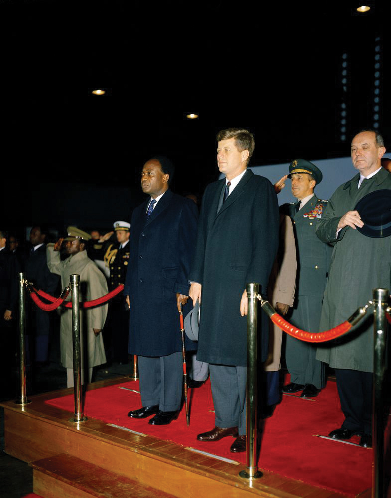
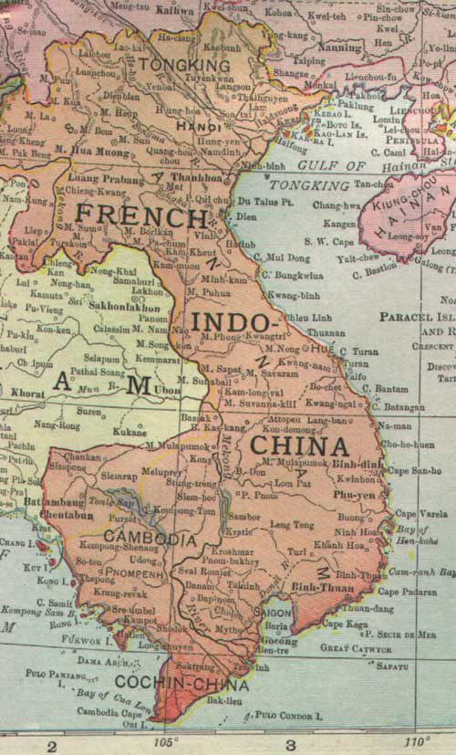
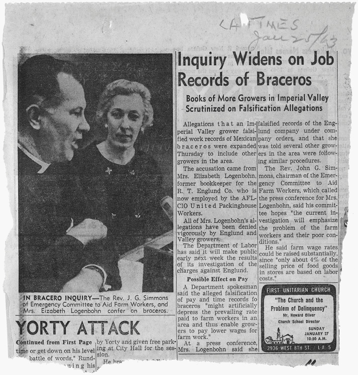
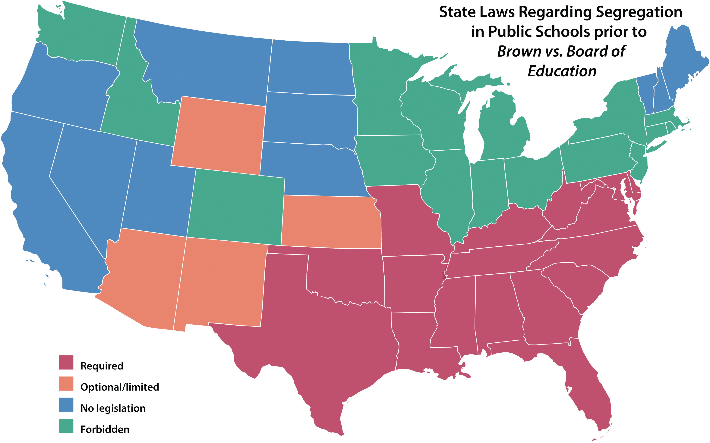
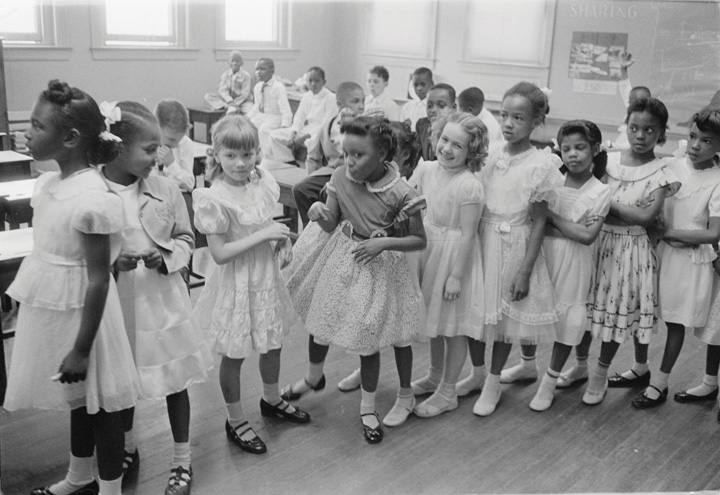
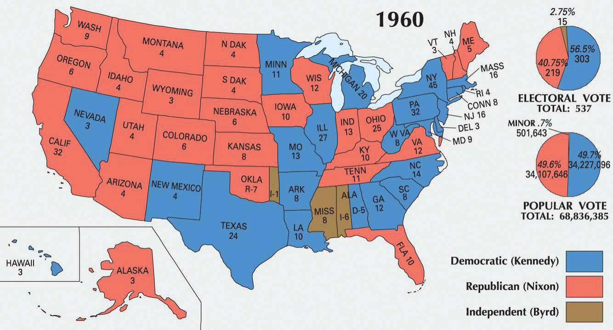
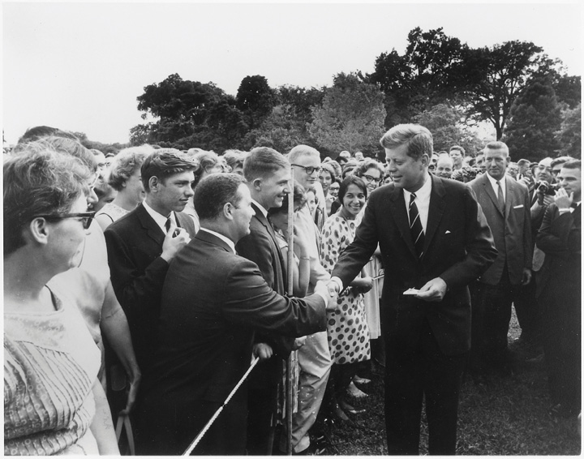
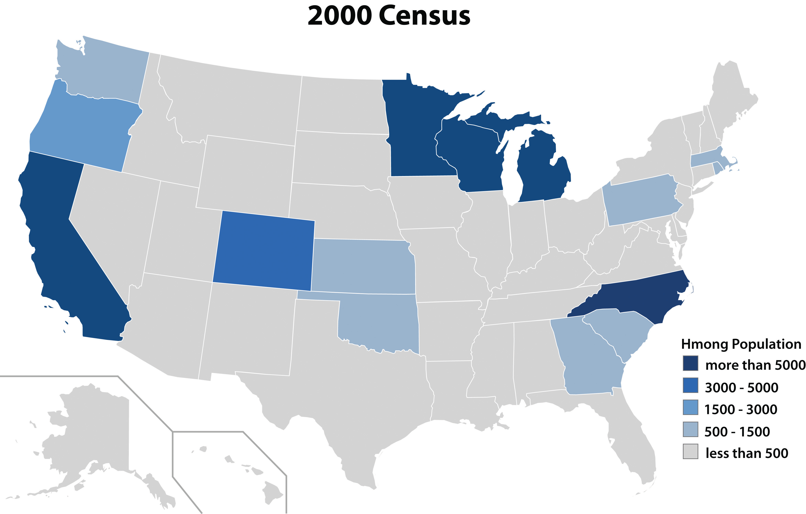

American and Soviet leaders focused increased attention on the affairs of nations in Latin America, Asia, and Africa as Cold War tensions increased during the 1950s and spread throughout the globe. The United States and the Soviet Union increasingly viewed that globe as a backdrop upon which their high-stakes contest of ideas and influence was being waged. As a result, these officials often projected a global Cold War framework upon local events and discounted the agency and ideas of the actual participants.
For example, both the United States and the Soviet Union might view the rise of a left-leaning political group in one African nation as evidence of increased Soviet influence throughout the entire continent. In reality, the explanation was usually something connected with local conditions and political opinions that the Kremlin or the US State Department were responding to rather than initiating. Because the State Department or the Kremlin usually consulted few area experts and ignored the perspectives of those who lived in these nations, such misperceptions were rarely challenged. The results were often tragic, both for peoples in these nations and for many Soviet and American soldiers and citizens. The parameters of the Cold War extended into the domestic sphere, where civil rights advocates, union leaders, and any others who espoused messages that were critical of the United States and its political leaders were accused of disloyalty. At the same time, the federal government’s desire to improve their nation’s international image led the State Department to support a number of civil rights initiatives.
By the mid-1950s, both the United States and the Soviet Union had adopted a strategy they hoped would limit the influence of their rival. The Soviet Union, for example, backed the repressive North Korean regime of Kim Il Sung, despite the fact that Kim rejected many of the core principles of Marxism. At the same time, the United States compromised its own democratic ideals by propping up the autocratic Syngman Rhee in South Korea.
Rhee and other leaders of Third WorldA term referring to economically underdeveloped nations. Most of these nations were not aligned with either the United States or the Soviet Union during the Cold War. The term was used heavily during the second half of the twentiethth century, often in ways that implied backwardness and even inferiority. Today, scholars only use the term “Third World” in the context of contemporary perspective, preferring to use terms such as “developing nations” in most other contexts. nations (referred to today as “Developing Nations”) recognized that both US and Soviet leaders feared that the other’s political and economic system would spread if not contained. As a result, they created their own strategies aimed at manipulating Cold War tensions for their own gain. To secure economic and military aid from Moscow or Washington, these leaders sometimes adopted the role of pawns in constant danger of being toppled by the forces of Capitalism or Communism. If the Soviet Union wanted to prevent the spread of Capitalism, Kim Il Sung warned, it would have to provide generous support to North Korea else it fall to Syngman Rhee’s South Korea, which was backed by the United States. Syngman Rhee likewise convinced the United States to support his repressive but anti-Communist regime by playing to American fears about the imminent spread of Communism. This same pattern appeared throughout the Developing World.
Figure 10.1
Kwame Nkrumah was the first Prime Minister of independent Ghana and an influential African leader. Nkrumah is pictured with President Kennedy. However, most communications between Ghana and the United States were conducted by American diplomatic officials such as Ralph Bunche. Bunche advised the State Department on Africa and the Middle East and became the first person of color to win the Nobel Peace Prize.
Even developed nations found that they could utilize the Cold War to further their own objectives. For example, French leaders demanded that the United States support its efforts to reconquer its former colony of Indochina (Vietnam). If the United States refused, the French threatened to withdraw their support of NATO. For leaders in Korea and Vietnam who were dependent on US or Soviet military support for their very existence, this brand of high-stakes blackmail might be recognized as a bluff. In addition, gamesmanship was a dangerous strategy for both aligned and nonaligned leaders. In dozens of instances, US and Soviet forces worked covertly to have leaders of developing nations removed by aiding their political opponents or even by backing violent regime change. For example, the United States covertly aided a number of violent coups in Africa that were based on the often exaggerated fears that a particular government or leader might promote Communism.
Such fears were rarely based on credible research. The problem was especially severe in Vietnam, where few US officials who oversaw the distribution of economic and military aid spoke Vietnamese or French. Most had never even been to Vietnam. For this reason, many emerging nations of the “Third World” rejected the pressure to affiliate with Washington or Moscow. For people in these nations, alignment meant willingly becoming a pawn in the superpowers’ game. People in these nations understood that US and Soviet aid came at the cost of internal sovereignty, and they were unwilling to sacrifice their newly won independence even if they desperately needed economic aid or military support.
These sentiments culminated in actions taken in 1955 at the Bandung Conference in Indonesia. There, dozens of developing nations resolved to stay out of the Cold War. Together they created a new force—the Non-Aligned Movement. Led by African leaders such as Kwame Nkrumah of Ghana and Gamal Nasser of Egypt, as well as Asian leaders like Jawaharlal Nehru of India, the Non-Aligned Movement encouraged nations to resist the influence of both superpowers, reject military alliances, and refuse to permit the construction of foreign military bases on their lands. Leaders at the Bandung Conference cited recent American intervention in Latin America as a cautionary tale about the dangers of alignment. In 1954, an American-supported coup toppled the popularly elected but leftist government of Guatemala and installed a military junta that would be responsible for the deaths of hundreds of thousands of civilians over the next three decades.
As various former colonies won their independence in Africa, Asia, and Latin America, US officials were determined to prevent any of these “new” nations from “falling” to Communism. They believed that early intervention could prevent another conflict similar to the Korean War. However, many in these nations resented the generous bestowment of American aid to their imperial oppressors through the Marshall Plan following World War II. Because of the massive aid given to Europe, which helped to prop up their empires, it mattered little to residents of developing nations that the United States proclaimed and maintained neutrality in most of their postwar struggles for independence. For the millions of former colonists who fought for and secured independence from Britain, France, the Netherlands, and other European powers during the 1950s and 1960s, the United States could not be trusted because it had been the leading ally of those who opposed their freedom.
It might have been otherwise. Most Americans supported measures that transferred domestic sovereignty to Filipinos during the 1930s and celebrated the creation of an independent Philippines on July 4, 1946. In addition, many Americans made common cause with the people of India and Indonesia and cheered when both became independent nations in 1947 and 1949, respectively. In areas such as French Indochina, however, the United States actively thwarted independence, even after French forces abandoned the region in 1954 due to concerns about the possible spread of Communism.
In other cases, Americans reacted with disinterest as dozens of nations won their independence. Although African Americans sent millions of dollars to aid independence movements in various African nations, few white Americans or white political leaders were supportive of these efforts. For example, black Americans actively assisted the Mau Mau RevolutionA prolonged and violent anticolonial struggle waged by Kenyan nationalists seeking independence from Britain during the 1950s. Native Kenyans protested the policies of the British government and eventually won independence in 1963., which began in British East Africa in 1952. After eight years of costly battles, the British finally abandoned their former colony and recognized the independent nation of Kenya. While millions of African Americans related African decolonization with their own freedom struggle, US officials and leading media outlets usually ignored the African independence movement or denigrated the efforts of Africans in overtly racist terms. At best, US officials expressed interest in African affairs only as they affected business interests and the Cold War balance of power.
The same was true in southern and central Asia. Few Americans called for intervention in the violence that killed hundreds of thousands along the India-Pakistan border following British withdrawal from the region. Even when the State Department sponsored aid and antipoverty programs throughout the world, these efforts were often directed against the spread of Communism. However, US diplomats were also guided by genuine humanitarian concerns that were sometimes independent of geopolitical calculations. In each instance, recipients of aid were made to understand that it would be discontinued if a nation turned toward Communism or formed alliances with Communist nations. This was especially true of nations located in the Western Hemisphere.
Figure 10.2

Che Guevara was a physician who became one of Castro’s revolutionary leaders. Killed at an early age in support of the spread of revolutions throughout Latin America, Che soon became an international icon representing both machismo and Marxism.
Preventing rival nations from gaining control of Cuba had driven US foreign policy in the Caribbean since the declaration of the Monroe Doctrine in the early nineteenth century. Cuba’s location just ninety miles from the US mainland meant that Cuban affairs could impact national security. The United States tolerated the undemocratic rule of Fulgencio Batista because the Cuban dictator opposed popular Communist movements that sought to replace his regime. From the perspective of most Cubans, however, Batista was a foreign-backed dictator who was more concerned with profiting from his cozy relationships with American business leaders and organized crime bosses than with addressing the nation’s problems. Many Americans were horrified by the way Batista brutally suppressed dissent. Others argued that the United States should “look the other way” so long as most of his victims were members of left-wing groups. By 1958, however, US officials decided they could no longer support Batista’s brutal and dictatorial regime. At the same time, however, they feared that supporting Batista’s removal would result in his replacement by a young Communist revolutionary named Fidel CastroCuban revolutionary leader who overthrew the regime of Fulgencio Batista in the winter of 1958 to 1959. Castro would lead Cuba until 2008..
The thirty-two-year-old Castro led a revolution against Batista and seized power on New Year’s Day 1959. Castro’s victory was welcomed by many in Cuba—especially the poor. The energetic young leader’s popularity was rooted in his promises to improve conditions for workers and restore democratic rule. Yet Castro also faced many opponents. Landowners who had thrived under Batista feared that Castro’s support for Marxist doctrines would lead to their property being confiscated by the new government. In response to their protests, Castro executed hundreds of Batista’s supporters. Even Castro’s idealistic lieutenant Che Guevara, an iconic and globally revered Marxist revolutionary, sometimes assisted in the brutal elimination of Castro’s opponents. Castro also launched a failed offensive against the Dominican Republic, resulting in international condemnation.
Figure 10.3

President Truman and his wife greet the shah of Iran during one of his many visits to the United States. The Shah had been placed back in power by the United States and made a number of policies that favored Western interests. As a result, he was opposed by many Iranians and later removed from power once again.
Despite these abuses of power, Castro retained the support of most Cubans. He justified his actions as necessary to prevent a counterrevolution and bolstered his support among poor Cubans by promoting several wealth redistribution plans. For example, Castro passed a law prohibiting foreign investors and corporations from owning land on the island—a measure that resonated with landless farmers because the majority of Cuban farmland was controlled by US sugar companies. Castro’s laws required foreign-owned lands to be redistributed equally among the people of Cuba who would collectively run their own farms. Castro also forced the American owners of the island’s resorts and casinos to leave the country, citing their reputed connections with organized crime syndicates.
Castro had spoken out against Communism, which convinced US leaders to officially recognize Castro’s revolutionary government in 1959. However, Castro’s actions soon convinced Americans that his leadership was harmful to US business interests. Castro, they feared, was leading Cuba down the road to Communism. Congress responded with sanctions restricting travel to Cuba and banning the importation of sugar and other Cuban products. Cuba had been America’s sugar bowl and vacation spot since the Spanish were forced from the island in 1898. Now, US economic sanctions were wreaking havoc upon the Cuban economy, thereby threatening popular support for the new leader.
Castro understood that Cuba’s long-term economic progress was dependent upon trade with more prosperous nations. He also believed that he needed to build a powerful military that could defend his nation from internal and/or external enemies. When US officials blocked weapons sales between Europe and Cuba, Castro looked toward the Soviet Union. Cuba’s growing alliance with the Soviet Union provided a lifeline to the island and an outlet for trade. However, it also alarmed US officials who began to ponder ways that Castro might be removed from power. Meanwhile, Castro’s popularity with the Cuban people started to decline as the US embargo led to economic stagnation. Many people also opposed his brutal intolerance of dissent. Some of Castro’s original supporters even felt that he had betrayed their revolution and began to question whether they had replaced one authoritarian regime with another. Some of these critics, and especially those with connections to the former landowners who had benefitted from Batista’s rule, migrated to the United States with the aid of the CIA.
The CIA encouraged the arrival of Castro’s opponents because the agency was planning a secret mission to train and arm ex-Cubans for an invasion of the island. The CIA believed that a small and lightly armed force could overthrow Castro’s regime. Similar plans had worked in the past against the leftist government of Jacobo Guzman in Guatemala. In addition, a recent CIA-backed coup in Iran had successfully removed a leader who appeared hostile to US financial and strategic interests. Because of these apparent successes, US officials increasingly viewed covert operations as expedient, simple, and cost-effective. The CIA launched similar campaigns in the Congo, Brazil, and Ghana. However, as events in Cuba and Iran would later demonstrate, covert actions did not always work and often led to unintended consequences.
Demand for oil mixed with Cold War rivalry and the long-standing conflict between Israel and its Arab neighbors to produce a series of crises in the Middle East during the 1950s. In 1948, Israel had repulsed an attack by Egypt and Syria. In 1956, Egyptian leader Gamal Abdal Nasser resumed the offensive against Israel. Although the attack stalled, Egypt seized control of the Suez Canal from the British and French. However, the combined forces of Israel, Britain, and France quickly overwhelmed Egyptian fighters and threatened to invade Egypt and remove Nasser from power. The resulting conflict became known as the Suez Canal CrisisA 1956 conflict between Egypt and Israel and their allies following the seizure of the Suez Canal by Egyptian forces under Gamal Abdel Nasser. In response, Britain, Israel, and France threatened to invade Egypt. Eisenhower feared that this would draw the Soviet Union into the region and pressured these nations to withdraw troops. Control of the canal largely returned to the status quo. However, the resolution of the crisis made it clear that the United States had taken the place of Britain and France as the leading outside power in the Middle East..
Americans recognized that Nasser maintained the support of the Arab world. If the United States chose to come to the aid of France, Britain, and especially Israel, it risked losing Arab support throughout the oil-rich Middle East. Eisenhower was particularly concerned about Nasser’s ties to the Soviets, fearing that armed conflict in the Middle East would lead to Soviet intervention on Egypt’s behalf. If this happened, Eisenhower believed, the Arab world would view the Soviet Union as an ally, and the West might lose access to Middle Eastern oil.
Figure 10.4

A battle map showing the British, French, and Israeli forces moving westward across the Sinai Peninsula toward the Suez Canal. The canal was in Egypt but had long been controlled by the West.
Eisenhower was especially angry because he believed that the use of force by Britain and France increased the volatility of the crisis and betrayed earlier assurances from both nations that they would act in consultation with the United States. The United States supported Israel’s defensive maneuvers, but it opposed Israel’s later march into Egyptian territory. The president also shared the concerns of both Israeli and European leaders regarding the seizure of the Suez Canal. Eisenhower believed that diplomacy could best resolve the crisis. But he also relied upon nuclear deterrence by scrambling US forces in the region. In the end, the Soviet Union decided not to intervene, and each of the leading parties permitted Eisenhower and the United Nations to broker a deal that led to the withdrawal of forces and the reopening of the Suez Canal.
The Suez Crisis resulted in subtle, but significant, changes in the region. For example, the resolution of the crisis demonstrated that the United States had replaced Britain and France as the dominant Western power in the Middle East. Increased Arab hostility toward the Europeans for their direct military support of Israel allowed the United States to take a larger role in the region. Finally, although US financial support for Israel continued, the Soviet Union’s pledge to support Nasser against Israel and the West led many in the Arab world to move closer to the Soviet Union. In response, the United States increased military and economic aid to a number of nonaligned Middle Eastern nations. In addition, the President issued a statement that came to be known as the Eisenhower DoctrineA foreign policy statement by President Eisenhower in response to the Suez crisis. Eisenhower promised to send economic and military aid to any nation resisting attack by “any nation controlled by international Communism.” The intent was to assure Middle Eastern leaders that the United States would be their ally so long as they opposed Communism.. Ratified by Congress in 1957, the President’s statement declared that the United States would intervene militarily against any aggressive Soviet action aimed at spreading Communism in the Middle East.
France governed Vietnam, known then as French Indochina, as one of its colonies from the late 1800s until Japan seized control of the region during World War II. In 1930, a young Vietnamese nationalist named Ho Chi MinhA nationalist committed to the independence of his native Vietnam, Ho Chi Minh led forces against the French, Japanese, and United States. During World War II, he received assistance from the United States because both he and the United States were fighting against the Japanese. Due to his support of Communism, however, the United States opposed Ho Chi Minh’s later efforts to unite Vietnam under his leadership. He died in 1969. formed a Communist resistance group that sought independence and greater economic opportunities for landless farmworkers. After fleeing French Indochina for his life, Ho Chi Minh led the Vietnamese independence movement in exile until 1941, when the Japanese seized control of the region. He then returned to his homeland and, with US aid, formed a nationalist group called the Vietminh. The Vietminh fought for Vietnamese independence against the Japanese during World War II.
The United States supported the Vietminh at this time because the Americans were also fighting the Japanese. Once the Japanese surrendered in 1945, Ho Chi Minh declared Vietnam an independent nation and sought recognition and support from the United States. Ho’s top priority was to prevent the French from regaining control of their former colony. However, the United States refused to consider supporting a Communist leader against one of their most important Western allies. Instead, the United States ended its support of Ho Chi Minh and began to provide military aid to France. In exchange, the French promised to support American anti-Communist efforts in Europe. Equipped with supplies purchased by millions of American dollars and armed mostly with American-made weapons, French troops slowly drove the Vietminh north.
Eisenhower took control of the White House in 1952. The new president subscribed to Truman’s Domino Theory regarding Communism and decided to continue US efforts to aid the French against Ho Chi Minh. During this time, South Korea was able to stand fast against Communist North Korea only because of US aid. Eisenhower believed that the situation in Vietnam was similar. The President steadily increased support for France—so much so that Washington was eventually financing 80 percent of the French war effort. Despite this aid, Ho Chi Minh’s forces were prevailing over the French and maintained popular support. The French desperately appealed to Eisenhower, asking the former Allied Supreme Commander to use US bombers to attack Vietminh positions. However, Eisenhower opposed the idea of sending US troops to fight a war to restore French colonial rule. At the same time, he and other US leaders continued to provide military aid to the French because they feared the alternative was the spread of Communism under the leadership of Ho Chi Minh. In 1954, a major Vietminh offensive decimated French forces at Dien Bien Phu, near the Laotian border. Shortly after this defeat, the French began to remove their troops from the region.
At first, it appeared that Eisenhower would have to either send US forces to fight Ho Chi Minh or accept a Communist victory in Vietnam. Instead, the United Nations brokered an agreement that temporarily divided the nation. This agreement, known as the Geneva AccordsA 1954 agreement ending the war between France and the Vietnamese nationalists led by Ho Chi Minh. Although the Vietnamese hoped for full independence, they accepted a temporary division of the nation with the understanding that an election would be held in 1956. Under the Geneva Accords, the party that won this election would unify all of Vietnam under its leadership., placed the former French-backed emperor of Vietnam in charge of the southern portion of the country. Ho Chi Minh was placed in charge of the northern portion. Similar to the agreement that established a truce between North and South Korea, the Geneva Accords designated a line of latitude as a border between the two sides. Vietnam’s 17th Parallel was recognized as the temporary border until UN-supervised elections could be held in 1956.
Despite the often brutal tactics used by Ho Chi Minh and his lieutenants to compel both soldiers and civilians to submit to the will of the Vietminh, many Vietnamese revered Ho Chi Minh as a freedom fighter. In their view, Ho Chi Minh had dedicated the last three decades of his life to securing Vietnamese independence from both the French and the Japanese. In contrast, many viewed South Vietnam’s president, Ngo Dinh Diem, as a corrupt dictator who had conspired with the French. Ho Chi Minh also favored collective land ownership. This idea appealed to many landless peasants who were forced to work on land that was owned by a small number of wealthy families who had conspired with the French during the colonial era. At the time of the Geneva Accords, many of the landowners and the bureaucrats who helped to keep these families in power were Catholics who had also supported the French. The majority of Vietnamese were impoverished Buddhists.
Figure 10.5
Vietnam had a long history of colonial rule by outside powers. This 1913 map was made when Vietnam was a French colony known as Indochina.
Given the unpopularity of Diem and all other French-aligned leaders in the southern portion of Vietnam, American officials feared the majority of Vietnamese would vote to join both sections of the country together under Ho Chi Minh’s leadership. Diem recognized this and responded by thwarting the scheduled 1956 election. The Eisenhower administration recognized that, if an election were held in 1956, Ho Chi Minh would easily defeat Diem and supported this decision. Hoping to create a prosperous, non-Communist alternative to Ho Chi Minh in the north, the United States sent millions of dollars to assist Diem’s government. However, Diem squandered this aid and continued to preside over a government that was as oppressive as it was ineffectual. Nevertheless, the United States continued to send military advisers and equipment to help build up the South Vietnamese army. The hope was that Diem’s regime could somehow create a stable and prosperous economy that would provide the people of Vietnam with an attractive option to Ho Chi Minh’s Communist government based in the northern city of Hanoi. Instead, most of the funds went to Diem’s supporters, thereby increasing the alienation of the people of South Vietnam.
In 1957, Communist guerilla warriors struck targets throughout South Vietnam. Americans referred to these fighters—Communists who supported the North but lived in the non-Communist South—as the VietcongGuerilla warriors in South Vietnam who supported the Communist army of North Vietnam and its leader, Ho Chi Minh, against US forces and the army of South Vietnam during the Vietnam War.. Ho Chi Minh viewed the Vietcong as a vital part of his strategy to capitalize on popular resentment toward Diem’s government in Saigon. As a result, Ho provided the insurgents with virtually all of their weapons and supplies. Delivering those supplies to the South, however, was no easy task given the narrow border between North and South Vietnam. To reach the Vietcong, Communist forces used a secret network of trails that twisted around mountains and valleys of Laos, Cambodia, and Vietnam. This supply network eventually became known as the Ho Chi Minh TrailA network of paths and tunnels connecting North Vietnam and South Vietnam that was used to supply and transport Vietcong and North Vietnamese soldiers. Many of the paths in this network wandered into Laos and Cambodia, and none of them was visible from the air. As a result, it was very difficult for US and South Vietnamese forces to stop the movement of enemy troops and supplies..
Guerilla attacks continued to chip away at Diem’s support, but the United States had decided that it must either support Diem, despite his liabilities, or install another leader in his place who opposed Communism. While privately wishing that leaders within the South Vietnamese military would replace Diem with a more effective and democratic leader, US officials continued to provide aid to Diem’s government. By the end of Eisenhower’s presidency, US leaders had declared they would “sink or swim with Diem.” The federal government hoped that Diem’s government could somehow resist the increasing attacks by Ho Chi Minh’s Communist supporters while ending the corruption and oppression that had turned so many South Vietnamese against his regime.
Figure 10.6

French troops manning an American-made tank in Vietnam during the early 1950s. Many Vietnamese were skeptical about American intentions in Vietnam during the next two decades due to the American support of the French at this time.
The Soviet Union encountered a crisis of succession following the death of Joseph Stalin in 1953. After a number of internal disputes, Nikita KhrushchevA Soviet official who emerged as the leader of the Soviet Union shortly after Stalin’s death. As Soviet premier, Khrushchev tried to modernize the economy and reduce the widespread human rights abuses that had occurred under Stalin. In 1964, after the Cuban Missile Crisis, opponents in the Soviet Union forced his resignation. emerged in 1955 as the new Soviet premier. The following year, Khrushchev gave a speech that detailed the internal corruption and violent purges that had occurred under Stalin. The speech shocked many Communists, both within and outside of the Soviet Union. Khrushchev’s attempts to lift restrictions on intellectuals and artists, however, were cheered by many throughout the globe. Khrushchev also disbanded the secret police, which had been notorious for tormenting dissenters.
Some Americans welcomed these reforms as evidence that the Cold War might thaw under Khrushchev. However, the Soviet premier soon came under fire from some leaders in his country who criticized him as being too “soft” on the West. Khrushchev responded with a series of speeches that reaffirmed his status as a critic of the United States, including a statement that he intended to “bury” the West. When challenged by Western leaders to clarify his incendiary remarks, Khrushchev indicated that it was not the Russians whom Westerners should fear. Instead, Khrushchev predicted that members of the working class would revolt against the Capitalist system. “Of course we will not bury you with a shovel,” the Soviet premier explained, “your own working class will bury you.”
Over the next decade, the new Soviet government under Khrushchev experienced dramatic increases in industrial productivity and scientific advancement. For many residents of Eastern Europe, however, these Soviet advances did little to ameliorate their condition. Hyperinflation continued to take its toll on the economies of Eastern Europe. Although many had hoped that the death of Stalin would end the brutal repression of dissenters, the Communist governments of Eastern Europe rejected political reforms. Conditions in Hungary were among the worst in Eastern Europe. Hungary had been a part of Hitler’s Axis Powers, and its government had been forced to make annual reparation payments to the Soviet Union after the war. Between these payments and economic stagnation, conditions in Hungary steadily declined.
Throughout the 1950s, the Soviet-backed Hungarian Communist Party ran unopposed in elections and brutally attacked intellectuals and others who dared to criticize the regime. In the summer of 1956, a revolt in Poland inspired students and workers in Hungary to also demonstrate in favor of democratic reform in their nation. Despite an initial crackdown by the Soviet-backed Polish government, a number of modest reforms had been passed in Poland. Seeking similar results, college students in Hungary launched what became known as the Hungarian Revolution of 1956A 1956 national uprising by Hungarians seeking an end to Soviet domination. The Soviet Union utilized garrisons of soldiers stationed in Hungary as well as additional troops to crush the uprising, remove the upstart Hungarian government, and reinstall a Communist régime that followed the leadership of the Soviet Union.. That October, protesters took to the streets and attacked symbols of Soviet authority, such as a massive statue of Stalin. Soviet forces, which had been garrisoned throughout Hungary since the end of World War II, were quickly besieged by Hungarian revolutionaries in nearly every city and negotiated a ceasefire. In the next ten days, Hungarian leaders established their own provisional government and disbanded the secret police. The new government immediately withdrew from the Warsaw Pact and sought new partnerships with the West.
Many Hungarians hoped that their new government might follow the example of nonaligned nations such as Austria. Hungary’s new leaders directed their diplomatic efforts toward seeking help from the United Nations to maintain their newly won and precarious independence. The provisional government pointed out that thousands of Soviet troops remained in their nation, despite Moscow’s promise of a total withdrawal. However, the United Nations recognized the volatility of the situation and refused to take action. Eisenhower’s advisers cautiously suggested that the President mobilize US troops to demonstrate support for Hungary’s attempted escape from the Communist Bloc. Instead, Eisenhower followed the course of the United Nations and refused to intervene. With tensions between the United States and Soviet Union already high due to the Suez Crisis, Eisenhower was reluctant to send troops into Soviet-dominated Eastern Europe.
Eisenhower feared that US intervention would force a tougher Soviet response. Perhaps if the United States and the UN had remained neutral, some advisers believed, Soviet leaders would not feel compelled to intervene, either. Khrushchev might permit Hungary to hold special elections if it could appear as though the Soviets were in control of the situation, US leaders believed. Intervention would destroy such a façade and might convince the Kremlin that a harsh demonstration of Moscow’s resolve was needed.
While American leaders debated strategies, Eisenhower’s window of time to support Hungary quickly closed. After just ten days, more than twenty armored divisions from the Soviet Union entered Hungary and surrounded the capital. The interim government was overpowered and replaced by a pro-Soviet government that immediately rejoined the Warsaw Pact. Thousands of Hungarians had perished during the attempted revolution, and more than 10,000 were imprisoned. Another 200,000 fled the country. The violent response that ended the Hungarian Revolution served as a warning for other Eastern European nations that might seek independence. It also demonstrated that the death of Stalin would not result in greater political autonomy for the peoples of Eastern Europe.
Soviet leaders had made it clear that they would not permit Hungary—or any other Eastern European country—to leave its sphere of influence. Shortly afterward, however, Khrushchev began to signal possible changes in foreign policy. In subsequent years, he gave several speeches in which he called for “peaceful coexistence” with the West. Eisenhower responded in 1959 by sending Vice President Richard Nixon to visit Moscow—the first official visit of any presidential administration to the Soviet Union since the beginning of the Cold War.
Figure 10.7

President Kennedy meets with Nikita Khrushchev in Vienna, Austria, in 1961. Although relations remained tense, the “Kitchen Debate” in Moscow between Khrushchev and Nixon opened the door for better communication between the leaders of the United States and the Soviet Union.
The occasion of Nixon’s journey was the opening of the American Exhibition—a display of numerous American cultural artifacts and manufactured goods. A highlight of the exhibit was a model home designed to showcase the comfort and affluence Americans enjoyed. Nixon and Khrushchev toured the home together while cameras recorded their conversation. Historians have labeled the exchange between the two men the “Kitchen Debate,” because most of their polite but tense conversation took place in the model home’s kitchen.
Although the American exhibit featured numerous works of art and culture, Khrushchev keyed in on the ways the model home emphasized materialistic values he believed were typical of the Capitalistic West. Nixon, too, said little about American contributions to art and culture, responding instead by lauding his nation’s material affluence in ways that hinted his belief that Soviet families endured a lower standard of living. In the end, the famed debate featured little in the way of substantive deliberation. However, both leaders emphasized their desire to continue the conversation and improve relations between their countries.
The Soviets sent an exhibit to New York that same summer. Nikita Khrushchev traveled to the United States for a thirteen-day tour in August. The Soviet premier visited a number of cities on the east and west coasts and briefly toured Pittsburgh and an Iowa farm. Although Khrushchev’s request to tour Disneyland was denied for security reasons, his trip went smoothly and inspired hope that the two nations might move beyond anxious pleasantries and move toward more substantive matters. Chief among these issues was concern over the growing nuclear arsenals that both nations possessed.
The highlight of the 1959 Soviet exhibit in New York was a replica of a small satellite named SputnikThe first satellite launched into space. Launched by the Soviet Union on October 4, 1957, Sputnik successfully orbited Earth and ushered in the space race—a scientific competition for supremacy in space exploration between the United States and the Soviet Union.. In October 1957, Sputnik became the first man-made satellite to orbit the globe. US scientists had made several attempts to launch a satellite that same year, but none of these early spacecraft managed to make it outside the atmosphere. In fact, many spiraled dangerously out of control. The fledgling US space program was increasingly criticized when Soviet scientists successfully launched a second satellite, Sputnik II. This satellite weighed more than 1,000 pounds and carried a live passenger—a dog named Laika. Americans expressed indignation that Soviet scientists did not provide a way for Laika to survive her entire space journey, but their own launch attempts were even shorter-lived. One rocket did little more than lean over and fall from its launch pad. The media dubbed this US satellite the “Stayputnik.” Finally, on the last day of January 1958, US scientists successfully launched a satellite named Explorer into orbit.
Figure 10.8

The canine cosmonaut Laika became the first casualty of space exploration after being launched inside of the Sputnik II satellite.
The American media expressed mild panic when the Soviets demonstrated such a commanding early lead in the space race. Some feared that Soviet satellites armed with nuclear bombs would soon be hovering in orbit above American cities. Recognizing the scientific limitations of using satellites as bombers, and believing that American initiative would soon outpace his Soviet rivals, Eisenhower counseled that Moscow’s space program had set an important precedent that could actually benefit US strategists. By being the first to launch a satellite that orbited the globe, the Soviets had effectively agreed that national borders did not extend to the heavens. While sending US spy planes into Soviet airspace might be considered an act of war (an issue that would soon increase tensions between the two nations), the fact that the Soviets had launched a satellite that orbited the globe without consulting the United States meant that US scientists could do likewise. Eisenhower envisioned satellites capable of tracking Soviet naval vessels and even spying directly on the Soviet homeland.
Congress responded to the Soviet space program by increasing funding for research and development programs. Further action was taken to consolidate existing aeronautical research programs into the National Aeronautics and Space Administration (NASA). Congress also passed the National Defense Education Act. This law provided direct funding for colleges to promote math, science, and engineering as well as foreign languages and area studies. The name of the law signified the government’s view that maintaining the world’s premiere system of higher education was vital to national security. A relatively small amount of funding was also included to provide loans for students who needed financial assistance to attend college. Little noticed at the time, the National Defense Student Loan Program inspired the much larger federal loan programs that presently assist millions of students who otherwise could not afford to attend college or purchase textbooks.
Though significant, government funding for education and many other domestic programs was overshadowed by annual expenditures for defense. President Eisenhower, a military hero and staunch advocate of national defense, viewed the nation’s skyrocketing military spending as a threat to the continued economic well-being of the nation. In an era of Cold War fears, those who called for reductions in military spending were often accused of being “soft on Communism.” As a result, it was significant that a leader of such unimpeachable military credentials as Eisenhower took the lead on this issue.
The President reasoned that it would be much cheaper to maintain a nuclear arsenal strategically located around the globe than match the size of the massive Red Army with its millions of soldiers. Secretary of State John Foster Dulles agreed. However, the Secretary of State also pointed out that for nuclear deterrence to work, the world had to believe that the United States really would respond to an attack of conventional forces by launching nuclear weapons. As a result, Dulles publicly announced that any attack against the United States would be met with an immediate and direct nuclear assault on that nation. In theory, this strategy of “massive retaliation” was little more than a public acknowledgement of Eisenhower’s existing strategy of nuclear deterrence.
Another key piece of the nuclear deterrence strategy was to make it apparent that the Soviets could not launch a first strike that would destroy America’s ability to retaliate. Eisenhower and Dulles committed the nation to massive retaliation by constructing an elaborate system based on maintaining second-strike capabilityThe ability of a nation to launch a significant number of nuclear weapons at an aggressor in retaliation for a nuclear attack, no matter how severe that first attack might have been. It stood as a significant measure of a nation’s nuclear deterrence.. By 1960, the United States had decreased overall military spending, but it had increased its number of nuclear warheads to 18,000. The United States also expanded its capacity to instantly deliver those warheads to targets around the globe.
The Strategic Air Command (SAC) of the US Air Force maintained squadrons of bombers armed with nuclear missiles in the skies twenty-four hours a day. The navy deployed fleets of submarines on secret missions throughout the globe—all armed with nuclear missiles and capable of hiding underwater for months at a time. Finally, the United States built top-secret nuclear silos hidden deep underground throughout the nation and on US military bases around the world. Such actions made it clear that even if the Union of Soviet Socialist Republics (USSR) launched its entire arsenal of nuclear weapons (which soon exceeded 20,000 warheads), it could not hope to neutralize the thousands of missiles that were in the skies, underwater, and hidden deep underground. Defenders of massive retaliation argued that such mutually assured destruction would prevent any nuclear attack. Eisenhower’s critics labeled the President’s reliance on nuclear deterrence as a policy of “brinksmanship.” These critics argued that Eisenhower’s willingness to rely on nuclear deterrence increased the likelihood that any war, or even a mishap, could lead to the extermination of all life on earth.
The possibility of global annihilation became an increasing concern as both nations developed massive nuclear arsenals composed of weapons that were hundreds of times more powerful than the bombs dropped at Hiroshima and Nagasaki. To maintain their arsenals, both nations performed hundreds of nuclear tests underground, underwater, and even on the ground. Each of these atmospheric tests spread nuclear fallout, and scientists documented spikes in radiation levels that spread far beyond the isolated test sites.
Civilian protests and international condemnation led both sides to consider limiting atmospheric tests. In the United States, activists formed the Committee for a SANE Nuclear Policy (SANE)The leading organization calling for an end to atmospheric testing of nuclear weapons and global disarmament. It was formed in 1957 in response to increased levels of radiation resulting from nuclear tests. in 1957. SANE’s goal was to raise awareness of the dangers of nuclear proliferation and atmospheric testing. These activists were aided in their cause by increased diplomatic communications between the United States and the Soviet Union during the late 1950s. In 1958, the United States, Great Britain, and the Soviet Union agreed to a temporary ban on atmospheric testing. Plans were also made to discuss mutual reductions in the number of nuclear weapons each nation possessed. However, this apparent thaw in the Cold War would prove short-lived.
In 1960, the Soviet Union shot down a US spy plane that had violated its airspace. President Eisenhower initially denied that the United States sponsored spy missions over Soviet territory. However, the President was soon forced to admit culpability when Moscow produced photographs of the captured pilot. Ironically, Eisenhower had considered ending all surveillance flights over the Soviet Union to prevent such a possibility, only to be convinced otherwise by his subordinates. After the incident, relations between the two nations quickly declined. Even an agreement to exchange the pilot for a captured Soviet agent did little to reduce these tensions. Criticized by many in his nation for what they perceived as weakness on the part of the Soviet premier, Khrushchev responded with a bellicose denouncement of the United States for its violation of Soviet airspace and refused to consider any future discussions about nuclear disarmament.
The thaw in relations that many had hoped would take place following Stalin’s death was no longer in the forecast. Instead, both nations resumed atmospheric tests in the fall of 1961, which prompted macabre meteorologists to include radiation levels among their weather predictions. The change prompted SANE and an army of celebrities and activists to rally behind the cause of limiting nuclear testing. Because of their efforts, the United States, Britain, and the Soviet Union agreed to the 1963 Partial Test Ban Treaty, which once again banned atmospheric tests. The treaty remains in effect, with only France, China, and North Korea conducting tests beyond the underground experiments the treaty permits.
Figure 10.9

Representative of the faster pace of life and material affluence, Americans began consuming large numbers of frozen meals that were precooked and individually packaged. These kinds of meals were seldom enjoyed by a family that sat around a table and became known as “TV dinners.”
Historians have frequently applied the label “The Affluent Society” to 1950s America. The moniker is both a reference to the increasing material wealth many Americans enjoyed and a tongue-in-cheek jab at the shortsightedness that led few to challenge the notion that all Americans were sharing equally in this prosperity. In 1958, Harvard economist John Galbraith’s book The Affluent Society aimed to explain the perpetuation of crushing poverty in a nation that enjoyed such vast wealth. Other scholars pointed out that despite the tendency of most Americans to describe themselves as “middle class,” the gap between the rich and the poor continued to expand.
Even if many Americans who considered themselves members of the middle class were actually part of the working poor, America’s standards of poverty and affluence were still exceptional compared to other nations. By 1960, a majority of American families owned their homes. Luxury items such as cars and televisions were increasingly considered necessities. With the exception of major purchases, Americans also continued to avoid debt. For many Americans, references connecting affluence and egalitarianism carried no ironic overtones as the problems of poverty and racial injustice seemed distant from their reality.
Figure 10.10

A political cartoon of this era mocking the flimsy foundation of McCarthy’s accusations, which were built on half-truths and complete falsifications.
Despite the atmosphere of prosperity, concerns about internal security continued to plague the nation throughout the 1950s. Senator Joseph McCarthy’s techniques were such that very few Americans were willing to challenge his attacks else they became his next target. Even President Eisenhower, a man who detested McCarthy and enjoyed global acclaim, avoided any confrontation with the bellicose senator from Wisconsin. However, a handful of prominent Americans at least indirectly challenged McCarthy’s techniques and the hysteria from which they had spawned. Journalist Edward Murrow used his nightly program to investigate the plight of an Air Force veteran who was discharged because he came from a family of Communist sympathizers. Playwright Arthur Miller wrote The Crucible, a 1953 drama ostensibly centered on the Salem Witch Trials. Those who read Miller’s work in these years clearly perceived the author’s purpose of exposing the parallels between Cold War hysteria and the Puritanical fear-mongering and wild accusations that erupted in seventeenth-century Massachusetts.
The characters in Miller’s play who sought evidence before convicting those accused of crimes soon found that they were among the defendants. Miller utilized these events in his drama to make his audience consider the tactics of misdirection and guilt by association used by McCarthy. Just as those called to defend themselves on charges of witchcraft had no way to prove their innocence, charges of disloyalty proved equally elusive. These accusations also placed critics of both witch hunts on the defensive by equating dissent with treachery. The indirect nature of the methods Murrow and Miller used to criticize McCarthy helped spare these two from the fate of The Hollywood Ten and others who challenged anti-Communist hysteria in less veiled ways. However, Murrow’s television show was later cancelled by its network while Miller was investigated by Congress and subject to harassment by demagogues.
The Crucible debuted in 1953, the same year that Joseph Stalin died and the Korean War ended. These two events helped to reduce the weight of McCarthy’s accusations. Perhaps more importantly, more and more Americans were already growing tired of the Wisconsin Senator’s wild accusations that were still not substantiated by any credible evidence. Even some of McCarthy’s strongest supporters began advising the Senator to stop talking about lists of “card-carrying Communists” in favor of more subjective accusations about the government being soft on Communism. Instead, McCarthy continued to make accusations that even his supporters knew were based on exaggerated or faulty information.
In 1954, Edward Murrow aired an exposé revealing the hollowness of McCarthy’s unsubstantiated accusations. The Wisconsin Senator could only respond with insults against the host. McCarthy then expanded his accusations to include members of the army. Military officials refused to be cowed by the senator’s bullying techniques and arranged a televised hearing. Millions watched live as McCarthy failed to provide any evidence of disloyal military officers. Instead, he himself became the subject of an inquisition for an earlier attempt to secure a draft deferment for one of his supporters. McCarthy responded with a personal attack on a young army officer he claimed was a Communist. McCarthy had attacked this particular young man before and had promised not to do so again. The army’s chief counsel, Joseph Welch, cut the Senator off with the now-famous line “Have you no sense of decency, sir, at long last?” Later that year, the Senate officially censured McCarthy for “unbecoming conduct.” He died three years later from an alcohol-related illness.
Senator McCarthy had surrendered all credibility, yet McCarthyism lived on. J. Edgar Hoover continued to use the FBI to monitor, discredit, infiltrate, and otherwise harass left-leaning political groups and civil rights organizations for the next two decades through a program known as COINTELPROA FBI program whose name was derived from the words Counter Intelligence Program, COINTELPRO was a series of covert operations between the 1950s and 1970s that sought to infiltrate and disrupt a host of organizations the FBI considered “subversive.” The targeted organizations included white supremacist groups such as the KKK, but they were usually left-wing or civil rights groups whose messages were critical toward the desired national image of progress and equality.. An acronym for “Counter Intelligence Program,” the FBI launched COINTELPRO in 1956 to infiltrate and disrupt Communist organizations in the United States. The program quickly escalated to using wiretaps and other forms of illegal surveillance techniques against a variety of organizations from the Ku Klux Klan to Vietnam protesters and the Black Panthers.
Eisenhower recognized the dangers of openly criticizing Hoover and the FBI. He went along with the Bureau chief’s demands to expand the various surveillance operations on thousands of Americans from Martin Luther King Jr. to college students and Native American leaders. Even J. Robert Oppenheimer, the “father of the atomic bomb” was targeted for speaking words of caution against the government’s plan to expand its arsenal of nuclear weapons. Oppenheimer was fired from his job after the government removed his security clearance, the result of an investigation that made it clear that the FBI had bugged his phone conversations for many years. Fellow scientists refused to speak with the unfairly disgraced physicist for fear they might share a similar fate. Meanwhile, various loyalty programs continued to investigate the personal lives of government employees, with hundreds of workers being fired based on little more than vaguely suspicious behaviors observed by unnamed sources.
Eisenhower and most of his Republican colleagues continued to support the expansion of popular New Deal programs such as Social Security. Under his administration, the program expanded to include three-quarters of employed workers and their beneficiaries and the total amount of payments increased tenfold between 1950 and 1960. The idea of a federally mandated minimum wage also continued to receive support by both parties, with the main partisan division being Democratic efforts to expand its provisions to include domestic and farm workers. These liberals found few adherents and these laborers, usually women and minorities, were not covered by the new minimum wage that guaranteed all workers at least one dollar per hour of labor. The two parties also differed on the extent to which the federal government should become involved in labor relations, its power to regulate private businesses, and the size and scope of the welfare state. However, neither Eisenhower nor his Republican colleagues in Congress sought to end entitlement programs such as Social Security or Medicare, meaning that these New Deal initiatives would continue regardless of which party controlled Washington.
Labor unions in the 1950s represented just over a third of workers beyond those in agriculture and domestic service, who were not unionized at all. The industrial unions of the 1950s were both bigger and more conservative than many of the early twentieth century. Nearly all focused on wage and benefit increases, and very few challenged the Capitalist system or advocated collective ownership. The American Federation of Labor (AFL) and Congress of Industrial Organizations (CIO) merged in 1955, yet the new AFL-CIOCreated by the 1955 merger of the American Federation of Labor and Congress of Industrial Organizations, the AFL-CIO is a federation of independent unions and represents more than 10 million workers who belong to over fifty different unions. experienced steady declines in the overall percentage of workers who were part of their organization. Part of this decline was structural and reflected overall trends in the economy. The total number of white-collar workers outpaced those who worked with their hands in the late twentieth century. Another challenge for the AFL-CIO was that many corporations were transferring their operations to states that had been hostile to unions and even to overseas locations.
Another reason for the decline was that some union members believed the leadership of the AFL-CIO was becoming complacent. Major strikes declined during the 1950s, and much of the work that was previously carried out by union leaders was now contracted to law firms and arbitration specialists. These hearings were often successful in terms of winning concessions for union members, but they lacked the apparent drama of previous labor activism. Many business leaders believed the opposite—that the leading unions were still too active and too powerful. They viewed the outcome of the most dramatic labor stoppage in the late 1950s, a nationwide strike by half a million steelworkers, as evidence that labor unions had a dangerous amount of control over the private sector. At issue was the conflict between utilizing new technology and reducing the workforce. Union contracts specified the number of workers that should be assigned to certain tasks, but steel companies sought to lower those numbers and save labor costs through automation. After four months, the unions prevailed. The outcome of the 1959 Steel Strike may have been a pyrrhic victory for the unions, however, as many Americans perceived the unions as opposing innovation and efficiency. Even worse for steel workers, American businesses turned to overseas firms during the strike, and domestic steel production never recovered.
Perhaps the greatest setback for the union movement during this era was the growing perception of corruption among union leaders. A 1957 Senate investigation exposed connections between a number of union leaders and organized crime. The investigation led to Jimmy Hoffa of the Teamsters Union becoming a household name. The investigation detailed sensational criminal allegations, from starting fake unions to laundering mafia money and an attempt to seize control of the entire shipping industry. In the end, the Senate secured little more than indictments against Hoffa. From that point forward, most Americans associated the Teamsters and numerous other leading unions with corruption. Senator Robert Kennedy rose to prominence as a leading member of the investigation, but he also alienated many working-class Americans who believed he was motivated by an agenda to exaggerate corruption as a means of furthering his own career.
Jimmy Hoffa notwithstanding, the late 1950s was a banner period for those in the domestic shipping industry. In 1956, Congress approved the Federal Highway Act, a national defense initiative that facilitated the movement of troops and equipment while also facilitating private and commercial transportation. The measure led to the construction of the federal interstate system and its 40,000 miles of highways. The Federal Highway Act received its strongest support among automobile and oil companies, but it worried many residents and business owners in smaller cities. Because these new interstates were designed to move traffic at high speeds without stopping, the roads bypassed small towns and directed traffic away from older commercial centers such as downtowns. The result was a drastic improvement in the ability to travel across the nation by automobile as well as the devastation of many small towns and businesses that were bypassed by the new roads.
One of the justifications for interstate construction was to provide civilians with a rapid means of egress in the case of nuclear attack. Defense remained the top budgetary priority of the federal government, with defense spending increasing from $13 billion at the start of the Korean War to more than $50 billion in 1953. The size and expense of America’s armed forces had contracted sharply following every war in American history up to this time. However, following the Korean War, the United States decided to maintain a large military and spent more than $40 billion each year through the end of the decade. President Eisenhower was skeptical about the wisdom of this course of action, and chose to highlight the potential danger of escalating military budgets in his January 1961 farewell address.
Eisenhower reminded Americans that the nation had only recently developed a permanent armaments industry. The outgoing president believed that this was a necessary development given the changing nature of warfare that placed greater importance on rapid mobilization. However, Eisenhower cautioned against the possibility that those representing the armaments industry might develop “unwarranted influence” in the halls of Congress. He labeled this potential problem the Military-Industrial ComplexA phrase utilized by outgoing President Dwight Eisenhower to describe what he believed was collusion between the representatives of the munitions industry, the military, and elected officials., a name connoting Eisenhower’s belief that military and government leaders were often guilty of doing the bidding of defense contractors. In the years that followed, Americans became increasingly aware that lobbyists representing corporations that produced military equipment were donating millions of dollars to political campaigns. These donations were clearly intended to influence politicians who might return the favor by purchasing their products or voting for overall increases in military budgets. Eisenhower believed that the potential harm was not only wasteful spending but also declining accountability among lawmakers to represent the views of their constituents.
Fidel Castro’s nationalization of the Cuban sugar fields led US companies to expand their operations in Puerto Rico. This expansion led to the eviction of hundreds of thousands of Puerto Ricans, many of whom were recruited to migrate to American cities by US firms. Between 1945 and 1953, 40,000 to 70,000 Puerto Ricans migrated to New York City each year. By 1960, Puerto Ricans represented nearly 10 percent of the city’s inhabitants. In fact, there were more Puerto Ricans living in East Harlem, Chicago, and Miami than lived in the Puerto Rican capital of San Juan. Although all Puerto Ricans were US citizens, most white Americans viewed the newcomers as outsiders. Signs explicitly barred Puerto Ricans from restaurants, while several attempts were made to legally prevent the newcomers from voting in local elections.
Figure 10.11
This 1963 story in the Los Angeles Times revealed allegations by a bookkeeper who testified that her former employer falsified the records of Braceros in order to withhold some of the worker’s pay.
US companies continued to recruit Mexican nationals to come to the United States through the Bracero Program. Unlike Puerto Ricans, their lack of citizenship made Mexican workers even more vulnerable. About 450,000 Braceros signed temporary labor contracts in 1959. These contracts permitted the migrants to legally live and work in the United States for a specified period of time and withheld a percentage of their pay until they returned to Mexico. Mexico encountered severe internal conflict during this period, leading many Braceros to choose to stay in the United States and forfeit their withheld pay. Some Americans were alarmed by the growing number of unlawful migrants, leading to the arrest of thousands of undocumented aliens under the terms of the 1950 McCarran-Nixon Internal Security Act. This law had been passed to permit the government to deport “subversives” such as Communists, but was now utilized against Mexican migrants. In 1954, the federal government supported police raids on private homes and areas where migrants were known to gather. The dragnet resulted in a million deportations in only one year. The name the federal government chose for this program, “Operation Wetback,” led many to believe that racism was a leading factor in the way the raids were conducted.
A growing cadre of Mexican American scholars and activists documented the frequent use of unlawful tactics among police and immigration agents against persons suspected of being illegal aliens. They also protested the mass deportations and publicized the conditions Mexican laborers faced. Former union organizer Ernesto Galarza completed a PhD at Columbia University and published Strangers in Our Fields in 1956. Galarza’s study brought national attention to the conditions faced by migrant farm workers. Writer Americo Paredes earned a PhD from the University of Texas at Austin and countered negative stereotypes by publishing a history of South Texas from the perspective of a Mexican American folk hero. Paredes presented an alternative to the dominant narrative by writing history from the perspective of Texans—the original inhabitants of what had only recently become the state of Texas. By this perspective, the Anglo founders of the state were illegal immigrants and the original Texas Rangers were imperialist mercenaries.
In 1952, the McCarran-Walter ActAn amendment revising the immigration policies of the United States, the McCarran-Walter Act represented a shift from quotas based on national origin to a system based on promoting skilled immigrants and prohibit migration of individuals whose political views were viewed as dangerous. Although many of the national origins provisions were removed or modified, the McCarran-Walter Act still limited the migration of nonwhite peoples from Asia to Africa. removed race as a barrier to citizenship and ended the almost total ban against Asian migration. However, the law reflected continuing prejudice against Asian Americans and merely modified the nation’s immigration quota system. After the law passed, no more than 105 Chinese and 185 Japanese immigrants could become citizens each year. Immigration historian Oscar Handlin was among the many who protested these quotas as tantamount to racial exclusion. However, included in the language of the act was a permissive statute granting relatives of current citizens the ability to migrate to the United States beyond these numerical limits. Little-noticed at the time, more than 100,000 people of Asian and African descent immigrated to the United States in the next decade under this provision. President Truman shared the criticisms of Handlin and others who thought the new law was racist. However, the president’s veto was overturned by the Democrat-controlled Congress.
Increased immigration led to new attempts to promote assimilation, especially regarding Native Americans who lived on reservations. The Truman administration appointed the same person who was in charge of operating the Japanese internment camps to lead the Bureau of Indian Affairs. The Eisenhower administration sought to reduce funding for reservations. And in 1953, a joint congressional resolution called for the gradual end to all special programs and funding for Native Americans, with the goal of rapid and complete assimilation. TerminationThe process of removing federal recognition of a Native American tribe. Termination was proposed as a means to encourage assimilation by offering a final settlement to Native American tribes that its proponents believed would lead to full integration of tribal members into American society. Opponents countered that termination was nothing more than an attempt to withdraw Native American sovereignty. These programs were abandoned after several well-publicized failures, and the government later rerecognized many of the terminated tribes., as the policy soon became known, led to the end of federal recognition of fourteen tribes between 1954 and 1960. Many Native Americans contrasted the massive government aid that was given to Europe without any conditions with the federal government’s policy of termination. They believed the requirement that natives surrender tribal sovereignty was part of a flawed plan to incorporate natives into the US mainstream. The high-profile failure of the policy to improve the lives of two leading tribes, the Menominee of Wisconsin and the Klamath of Oregon, led to a successful campaign to end termination in favor of new programs aimed at strengthening Native American self-governance and revitalizing life on the reservations.
Prior to an 1864 treaty, the federal government had granted the Klamath more than 20 million acres. By the 1950s, that reservation had been reduced to 1.3 million acres in Oregon. However, the tribe was still largely financially independent due to the reservation’s natural resources of farmland and timber. Tribal members shared revenue from the use of their land and lived modestly. Previous treaties had guaranteed annual payments to the tribe in exchange for their acceptance of provisions reducing the size of their reservation as well as hunting and fishing rights on area lands. As a result, most Klamath had grown financially dependent on the federal government and the distributions of income paid from the use of their lands. Termination threatened to end the reservation system completely in favor of a lump-sum payment to tribal members. Advocates of termination pressured the Klamath and even spread misinformation asserting that they might lose everything if they did not accept the lump-sum payment.
In 1954, the government agreed to purchase the reservation for $90 million and end federal recognition of the tribe and cease all future payments to tribal members. This proved to be a financially shrewd move on the part of the government, given revenues in excess of $200 million the federal government received for the use of these lands in subsequent years. Some of the Klamath invested their share of the federal payoff wisely. Many others had little knowledge of finance and quickly spent or were swindled out of their money. The result was a tremendous increase in alcoholism, juvenile delinquency, and abject poverty. For many historians, termination represented the modern-day equivalent to the Dawes Act and its destruction of native communities and transfer of native lands to the federal government and land speculators.
In the late 1930s, black plaintiffs won decisions that secured their right to attend public universities that had previously excluded them. By 1950, the NAACP decided to challenge segregation in public schools. At this time racial separation was required by law in seventeen states and the District of Columbia. In 1954, five lawsuits challenging the constitutionality of school segregation were consolidated under the name Brown v. The Board of Education of Topeka, Kansas. The reason the NAACP’s case took on the name of the Topeka case was because its plaintiff’s name preceded the others alphabetically. However, the selection of a Midwestern city helped to demonstrate that segregation was not simply a Southern phenomenon. Kansas officials were in the process of outlawing segregation but did not move quickly enough to avoid the dubious distinction of being forever associated with racial discrimination. Instead the state’s case was assigned to a recent law school graduate who was personally opposed to segregation.
Figure 10.12
At the time of the Brown decision, seventeen states had laws requiring racial segregation while a number of others had no laws on the subject. States such as Kansas permitted segregation if there was a large number of black students that would allow a separate school to be operated economically.
The young attorney would find that he was opposed by the State Department, in addition to the NAACP and a host of liberal organizations. This was because the 1954 case, like everything else at this time, was deeply influenced by the Cold War. Soviet agents had made extensive use of US school segregation in their global propaganda, so much so that the State Department wrote a number of legal briefs in support of the NAACP’s position. Diplomats and bureaucrats alike lobbied the Supreme Court and helped convince the justices to unanimously declare that the maintenance of separate schools would no longer be permissible. Over a hundred local courts had made similar rulings beginning in Iowa in 1868. The 1954 decision was historic, however, because the Supreme Court ruled that segregation violated the Fourteenth Amendment of the Constitution. It also explicitly overturned the doctrine of “separate but equal” by declaring that even if schools received equal funding, the simple act of segregation alone violated the doctrine of equal protection. And because the case was decided by the Supreme Court, the decision applied to schools throughout the nation.
The court’s decision prompted mixed reactions throughout Border South states that still explicitly required or permitted racial segregation by law. In Missouri, Oklahoma, Delaware, Maryland, and West Virginia, state education officials promised to adhere to the ruling. Many stated that segregation would end with little trouble as long as the change was implemented slowly. The governor of Texas also indicated that his officials would comply with the ruling, but hedged his remarks by indicating that it would take many years before school officials in his state could even develop a plan to start the process.
Those who hoped to stall the process of integration were encouraged by many of the events that followed. President Eisenhower avoided any statement on the matter, and most school districts continued to maintain separate schools. More than ninety Southern congressmen issued a statement they dubbed the Southern Manifesto; it denounced the Brown decision and urged government officials to ignore it “by all lawful means.” State officials throughout the Deep South promised total resistance to any effort to “force” the desegregation of their public schools. For example, Georgia governor Herman Talmadge promised that he would find a way around the court’s decision and “insure permanent segregation of the races.”
Figure 10.13
Not all Southern communities actively resisted integration. Many cities in the Border South peacefully integrated their schools despite resistance by some parents. This photo depicts an integrated classroom in Washington, DC, in 1955.
Urban school districts on the border between North and South, like Baltimore, Lexington, and St. Louis, pursued a different strategy. In predominantly white neighborhoods, a handful of middle-class black students attended formerly all-white schools, while inner-city districts remained almost completely segregated. Some school districts in rural and smaller cities throughout the Border South integrated immediately, but most simply chose to do nothing and see what the courts and federal government would do next. They soon found that black communities would not wait. Local NAACP chapters throughout these communities gathered petitions and filed lawsuits demanding an immediate and unconditional end to segregation.
In 1955, the Supreme Court issued what has become known as Brown II, a legal brief that was supposed to contain legal guidelines on how desegregation must proceed. Hoping to bridge the controversy and demonstrate sensitivity to the concerns of Southern whites, the Court declared that public schools must proceed “with all deliberate speed” toward integration. While the court intended that this would demonstrate an understanding of the logistical difficulties of reassigning pupils and teachers, this second Brown decision was interpreted by many whites as a loophole they could exploit. In the absence of presidential or congressional support for integration, decisions regarding integration were determined at the state and local level and within the federal courts. In addition, the Brown decision did not yet apply to private schools.
The failure of Brown II to provide any timetable for compliance sent a clear message that the government wished to counter Soviet propaganda by outlawing school segregation but would not actively enforce the measure. If black communities desired to end segregation, they would still have to initiate lawsuits and secure court orders forcing each individual school board to integrate. In other words, integration was required by law, but the burden of enforcement fell on those citizens who desired compliance with the law.
Figure 10.14

Federal troops were deployed to Arkansas to protect the nine African American students as they attended school during an entire academic year. When faced with future integration cases, many schools in Arkansas and throughout the Deep South simply closed.
Such was the situation in Arkansas in 1957 after the black community secured a court order demanding the integration of Little Rock’s Central High School. Nine students with outstanding academic credentials were selected to be the first to integrate the school. Arkansas governor Orval Faubus responded by calling out the Arkansas National Guard to prevent the children from entering the building. This action by a governor to use state troops to prevent a federal court order provoked a constitutional crisis and forced President Eisenhower to end his silence on the matter. Eisenhower summoned Faubus to Washington, where the two agreed that they both opposed the court’s decision but had no choice but to follow the law. When Faubus returned to Arkansas, however, he played to the white supremacist majority and once again sought to thwart integration. Eisenhower responded by placing the Arkansas National Guard under federal orders and sending the 101st Airborne to enforce the court order mandating integration. For the rest of the school year, federalized troops escorted the nine students to school. Leading Southern politicians appealed to the populist anger of many whites, likening the use of federal troops as a “second invasion” of the South and promising to hold the line against further Yankee efforts to force integration on their communities.
The desegregation of the buses of Montgomery, Alabama, was one of the few clear victories for the Civil Rights Movement in the Deep South during the 1950s. However, numerous community organizations and the courage of activists such as Mississippi’s Medgar EversA civil rights leader in Mississippi who was assassinated on June 12, 1963. Despite the viciousness of those who opposed him, Evers followed the doctrine of nonviolence. However, he also carried a gun with him every day and left multiple weapons around his home to defend his family. After her husband’s murder, Myrlie Evers continued to run the local NAACP office that she and her husband had operated since its founding; she later became one of the organization’s national leaders. continued to challenge segregation throughout the decade. After returning to his native Mississippi following World War II, Evers and other veterans marched to the courthouse to cast their votes. They were forced to flee for their lives by an armed mob inside the courthouse. After graduating with honors from the historically black Alcorn A&M (today Alcorn State University), Evers attempted in 1954 to enroll in the all-white law school at the University of Mississippi. His application was denied on a technicality. In the meantime, he accepted a position as the NAACP’s first field secretary in Mississippi. It took university officials nearly a year to come up with a reason to reject the academically talented Evers. While his application was still pending, the young Evers attended to his ailing father. Evers recalled that his last moments with his father were marred by the screams of a lynch mob outside the basement window of the segregated hospital. Later that same year, Medgar and his wife Myrlie Evers opened the first NAACP office in Mississippi.
Racial violence thrust Medgar Evers into the national spotlight in 1955 when he led the fight to convict the murderers of fourteen-year-old Emmett Till. The young man was killed in retaliation for allegedly whistling at a young white woman. Although Till’s murderers bragged about the crime, they were never convicted. The very fact that Mississippi held a trial, however, was evidence that the Evers had forced a change in the attitudes of both blacks and whites in the Deep South. Blacks in Mississippi defied white mobs outside the trial, openly brandishing weapons as a warning against future attacks. Till’s mother requested that her son’s casket be left open so that everyone would have to see the beaten and disfigured body of her son. “I wanted the world to see what they did to my baby,” she explained. Photos of Till’s mutilated face were published in newspapers throughout the world. While Till was one of hundreds of African Americans whose murders escaped justice despite eyewitness reports, the mutilated face of Emmett Till mobilized blacks and some whites behind the growing civil rights movement.
In 1956, segregationists formed the Mississippi Sovereignty Commission. This was but one of many state-funded organizations that used millions of taxpayer dollars to fight integration and spy on civil rights leaders. Recently declassified records include thousands of pages detailing how the Mississippi Sovereignty Commission funded the White Citizens Council, illegally spied on black leaders, worked to persuade private employers to fire black workers connected with civil rights, and was even responsible for some of the information used by Klansmen to murder civil rights activists during its twenty-year existence.
In spite of the daily threat of violence, civil rights activism continued in Mississippi and beyond. Students at HBCUs like Florida A&M initiated a bus boycott in 1956 that led to the desegregation of buses in Tallahassee. The following year, students at the University of Texas lobbied for racial integration. In 1958, black students protested segregation in the public schools of Washington, DC, with the help of Jackie Robinson. Martin Luther King Jr. and a coalition of black clergy responded to the demands of their parishioners and formed the Southern Christian Leadership Conference (SCLC)Formed by Martin Luther King Jr. in 1957, the SCLC was an organization led by black ministers who supported the civil rights movement. Although the SCLC was more conservative than many other civil rights groups, the participation of ministers and churches provided the civil rights movement with institutional support, and most civil rights meetings would be held in black churches throughout the nation. in 1957. The SCLC was a coalition of preachers who viewed desegregation as part of the mission of the black church. This organization remained rather conservative compared to later civil rights groups. However, students and others prodded SCLC leaders such as King to support their direct action campaigns such as sit-ins. Before long, King even agreed to join the students and share their hardships.
Black communities throughout the North and West secured civil rights gains through direct action, court challenges, and by petitioning state legislatures throughout the decade. In 1953, black activists in the state of Washington succeeded in passing an ordinance banning racial discrimination in employment. Two years later, blacks in New Mexico secured a civil rights law banning segregation in restaurants, hotels, and all other public places. Nationally, the NAACP sought similar legal change through federal courts. Between 1938 and 1961, the NAACP took thirty-two cases to the US Supreme Court and won twenty-nine of them. In 1946, for example, the courts banned segregation on buses traveling through multiple states (buses operating in only one state were subject only to the laws of that state). In 1947, members of the Congress of Racial Equality (CORE) launched the Journey of Reconciliation, a collection of white and black activists who traveled together and sought to enforce the court’s ban on segregation in interstate travel. However, CORE’s efforts went largely unnoticed among whites as well as some African Americans.
Less than a decade later, however, a protest against bus segregation would spur a renaissance in CORE’s philosophy on direct action. Whereas interstate travel was not an everyday experience, Southern blacks relied on city bus systems for transportation. Segregation on city buses was more personal than interstate travel because riders on a particular route usually knew one another. Birmingham, Alabama, and many other Southern bus systems required that black patrons follow a humiliating daily ritual by entering the front of the bus, paying the fare to the white bus driver, and then exiting the bus and walking to the back door. Once they reentered, a black patron could select an open seat in the back of the bus if it was available. If at any point a white rider did not have a seat, the nearest black patron was expected to silently leave his or her seat and stand in the back.
What is too big for one person to handle can be figured out by all of us together…We will have a new kind of school—not a school for teaching reading, writing, and arithmetic, but a school for addressing problems.
—Myles Horton, Founder of Highlander Folk School in Monteagle, Tennessee
Her challenge of this system would make Rosa ParksA Montgomery seamstress and leader within the Montgomery NAACP, Rosa Parks is best known for her refusal to give up her seat on a segregated bus in 1955. Parks worked with other local leaders such as Jo Ann Robinson and Martin Luther King Jr., who together led a movement that successfully forced the integration of the Montgomery bus system. a household name. Parks was a seamstress and also the secretary of the Montgomery chapter of the NAACP. Months prior to her heroic stand for civil rights, she attended a workshop in the Appalachian foothills of Tennessee at a place called the Highlander Folk SchoolA nontraditional school in the Appalachian foothills of Tennessee that taught adult learners and served as a place for these adults to discuss and find solutions to the problems their community faced. By 1950, Highlander became a center of activity for civil rights activists throughout Appalachia and the South.. Here she met with white and black activists who had begun holding interracial workshops in anticipation of school desegregation around 1950.
Myles Horton and other Appalachian whites recognized that racism had been used to divide poor whites and poor blacks for decades. They feared that similar prejudices might jeopardize the public school system once the courts mandated integration. Instead, they hoped to unify Appalachians and Southerners of all races and demand that public schools continue to receive funding. If Southerners would stop being divided by race, Horton believed, a movement might be forged that would finally force the wealthy to respond to the demands of working people.
In the fall of 1955, Rosa Parks attended Highlander and participated in a workshop on the power of nonviolent protest. Parks and others from Montgomery, Alabama, left Highlander with doubts that people in their community would go along with anything as radical as school or bus desegregation. But when she returned to Highlander in March 1956, one hundred days into what would become a 381-day boycott, 50,000 people in Montgomery were sticking together and would eventually force the city to integrate the buses.
Figure 10.15

This is the original report filed by the Montgomery, Alabama, police after they arrested Rosa Parks for refusing to move from the white section of a bus operated by the city. The organizational drive of local leaders such as Parks, Jo Ann Robinson, Martin Luther King Jr., and E. D. Nixon led to a 381-day boycott of the city buses until the city of Montgomery ended its segregation policy.
Rosa Parks was not the first to refuse to give her seat to a white person in Montgomery. Months prior to Parks’ arrest, a high school student named Claudette Colvin had been arrested for her refusal to move to the back of the bus. Leading black clergy and community members vowed to stand by Colvin until it was found that she was pregnant and unmarried. At least one other student was arrested prior to Parks. The difference was that Parks was a respected member of the black community whose arrest sparked action by Montgomery NAACP leaders. Jo Ann Robinson recruited students who worked around the clock to distribute flyers publicizing Parks’ arrest and calling a mass meeting to decide on a response.
Robinson and E. D. Nixon, president of the local NAACP chapter, had long been preparing for a direct action campaign against the city bus system. Together with a new preacher named Martin Luther King Jr.Son of a prominent Baptist minister, King would follow in his father’s footsteps and rise to national prominence as a clergyman and leader of the Montgomery Bus Boycott. As the leading national civil rights activist, King inspired, led, and participated in dozens of nonviolent protests against discrimination in the workplace and racial segregation until his assassination in 1968. the black community formed the Montgomery Improvement Association (MIA)Inspired by Rosa Parks’ 1955 refusal to give up her seat on a bus, the black community of Montgomery formed the MIA to pressure the city to end segregation. For 381 days, 50,000 African Americans in Montgomery refused to ride the city buses until segregation was abolished. and decided to boycott the buses until the city agreed to a compromise. A committee representing the black community first requested a compromise measure. Black patrons would continue to sit in the back of the bus but would no longer enter the bus through the back door after paying the driver. The city refused. Black patrons represented over half of the people who rode the bus in Montgomery. When 50,000 customers suddenly stopped using the bus, the city faced financial peril. For the next 381 days, the black community of Montgomery taught the nation a lesson in the power of community and the power of consumers. Halfway into the boycott, city leaders agreed to the MIA’s original demands. However, members of the community now demanded a complete end to segregation. Together with a court challenge that culminated in a November 1956 Supreme Court decision banning bus segregation, the city of Montgomery agreed to a complete end to all forms of racial discrimination on city buses.
The success of the movement was attributed to the leadership of Jo Ann Robinson, Rosa Parks, E. D. Nixon, and Martin Luther King Jr. King quickly rose to national prominence. The real history of the movement, however, was the story of the power of community activism. With no sign that their protest would ever be rewarded with anything more than arrests and harassment, 50,000 black people walked each day to and from work and school for 381 days. Black and white college students and church groups around the country sent money and even a few used cars to help MIA volunteers provide rides for those whose jobs were too far from their homes to walk. Black-owned taxis reduced their fares and often operated at a financial loss.
In response, white city officials contacted the automotive insurance companies who agreed to cancel policies of all vehicles operated on behalf of the boycott. When this failed to derail the movement, the Montgomery police arrested the volunteers and revoked the licenses of the taxi drivers. The protesters responded by taking the funds they were using for their share of gasoline to purchase more shoes. Members of the city’s White Citizens’ Council used firebombs and death threats, yet the boycott continued. When some of the participants complained they were too exhausted to continue, the example set by other participants inspired them to endure. “My feets are tired,” an elderly woman had declared during one of the many mass movements, “but my soul is rested.”
The historic image of President Kennedy demonstrates the frequent gulf between history and memory. Remembered as the quintessential liberal and civil rights supporter, Kennedy actually considered domestic matters as secondary to international affairs. He cared even less for the more liberal wing of his party. He avoided issues of civil rights until his last year in office and was reluctant to advocate the expansion of the welfare state, especially when compared to other the leaders of the Democratic Party.
Kennedy entered the 1960 Democratic primaries as the least popular Democratic contender among blacks and liberal Democrats. His nomination disappointed many Democrats who pointed out that even Richard Nixon had a stronger civil rights record due to a handful of supportive statements he had made while vice president. Richard Nixon had also backed a controversial attempt to introduce a civil rights plank into the Republican Party platform.
In general, both candidates appeared very similar in terms of issues and platforms. Many voters were ambivalent regarding the two candidates after several radio debates. Kennedy’s poise and princely appearance has been credited for throwing many votes his way after Nixon refused makeup during an infamous televised debate. However, there is little evidence by which to measure the importance of Kennedy’s physical appearance, the importance of which may have been embellished by the latter mystique surrounding the glamour of Camelot and the Kennedy White House.
The Kennedy campaign focused almost exclusively on issues of national security, attacking the Eisenhower administration, and Vice President Nixon by implication, of being too soft on Communism. For example, in one debate with Nixon, he accused the Eisenhower administration of permitting Communists to infiltrate America’s own backyard in Cuba and proposed that if he were president, he would support the overthrow of Fidel Castro. Nixon had been quietly planning a secret operation to do just that and could only meekly respond else he risk exposing the plot.
As a politician who won election to the House and Senate by red-baitingThe use of allegations to create the impression that a political rival is a supporter of Communist ideas without specifically making such a claim. his opponents and speaking to populist frustrations, Nixon could do little to respond now that he had been in the nation’s second-highest office for nearly eight years. Instead, he attempted to connect himself to the popular president under whom he had served. This tactic was derailed by a single comment Eisenhower had made when asked by a reporter for an example of how Nixon had contributed to his eight years in office. “Give me a week,” quipped Eisenhower who made few attempts to hide his ambivalence toward the vice president, “and I might think of one.”
As the general election neared, many of Nixon’s advisers suggested that the Republican candidate issue some kind of mild statement in favor of civil rights. Nixon’s refusal to do so helps to explain why he lost his lead in the polls among northern black communities. The other reason why Kennedy won more than 70 percent of the black vote in the general election was that JFK and his brother Robert Kennedy worked behind the scenes to secure the safety and release of Martin Luther King after he was sentenced to four months hard labor in Georgia for a minor traffic citation. The agreement was reached in private since Kennedy recognized that association with civil rights would spell disaster for his campaign among the majority of whites in America who still despised King in 1960.
Figure 10.16
The election of 1960 was an incredibly close contest. The third individual to receive electoral votes was Harry F. Byrd, a prominent Virginia politician and advocate of massive resistance to integration. Byrd was not an official candidate, meaning that presidential electors representing Mississippi and Alabama disregarded the votes that were cast in their state and voted for Byrd as a protest against what they believed were the liberal policies of both Nixon and Kennedy.
Martin Luther King Sr. responded to the news of his son’s release by reportedly exclaiming that it was time he and all other black Americans “take off their Nixon buttons” and support Kennedy. A last-minute campaign to spread the word about JFK’s intervention spread through black communities (but remained invisible to whites) and meant the difference in several key states like Illinois and Maryland where Kennedy won by the narrowest of margins. Nationally, Kennedy received only 0.2 percent more votes than Nixon, and had it not been for the urban vote in cities such as Chicago and Baltimore with black majorities, Nixon would have prevailed. Whether Kennedy actually owed his election to African American leaders and their last-minute campaign is a matter of debate; yet black leaders made sure to remind Kennedy of this possibility throughout his term.
President Kennedy entered the White House with great energy and electrified the public with his stirring inaugural address in which he challenged listeners to ask how they might serve their nation instead of asking what that nation might do for them. As a candidate, Kennedy exuded youthful vigor and optimism. As a president, he and his young family fascinated the American public. Students and adults alike took speed reading courses to try to match the President’s ability to read and comprehend ten pages per minute. Women mirrored the elegant style of Jackie Kennedy while men saw images of Kennedy with his young children, the first ever to grow up in the White House, as a reminder that they too could balance career and fatherhood. Balance would prove to be a difficult goal for the young president, however. The same inaugural that inspired a nation to service also committed the United States to “bear any burden” to contain the Communist threat. Although it would not yet be apparent in 1960, balancing domestic issues with global commitments would become the leading challenge of the decade.
As a candidate, Kennedy had challenged Americans to renew the nation’s pioneer spirit and spoke of the new decade as a New Frontier. As president, Kennedy would refer to his domestic programs as the New Frontier—a phrase that inspired hope for new possibilities and was vague enough for supporters to envision their own ideas. (Given the historic experiences of Native Americans, the phrases such as “frontier” and “pioneer spirit” had completely different connotations.) Liberals envisioned the New Frontier as the quest to end racial injustice and poverty, fulfilling the nation’s promise of liberty and prosperity. Kennedy supported modest spending for antipoverty programs and even began to speak in favor of civil rights, at least in vague terms calculated to lose few votes among white voters.
As President, Kennedy only agreed to meet privately with controversial black leaders such as Martin Luther King Jr. At one of these private meetings, the president asked King to draft a Second Emancipation Proclamation. He told King he would read and sign this document on January 1, 1963, one hundred years after Lincoln outlawed slavery throughout the Confederacy. King obliged, but Kennedy quickly recognized that such an overt sign of support for King—still hated among most Southern whites and a controversial figure throughout the rest of America—would cost him votes. JFK avoided the civil rights leader until New Year’s Day had passed without any statement from Kennedy. For African Americans, if Kennedy was not even willing to honor Lincoln and commemorate the historic end to slavery, it was doubtful that the New Frontier would challenge contemporary barriers of racial prejudice.
Kennedy also avoided women’s leaders who sought the president’s support for the Equal Rights Amendment, which they had introduced each year beginning in the 1920s. Pressed by Eleanor Roosevelt to offer at least moderate support for women’s issues, Kennedy appointed the former First Lady to lead a Presidential Commission on the Status of WomenA 1961 committee originally led by Eleanor Roosevelt that considered hundreds of pieces of legislation relating to the condition of women. Composed of prominent men and women who were relatively conservative in their views on gender, the commission issued a report detailing the advances of women but recognized continuing inequalities in fields such as education and labor. in December of 1961. Roosevelt passed away the following year, but the Commission continued to reflect the relatively conservative stance of the older generation of women and men who led the proceedings. Kennedy interpreted the committee’s findings as a validation of traditional gender roles.
By 1920, women had attended college in roughly equal numbers as men and were nearly as likely to graduate. By mid-1950s, however, the percentage of women in college had dropped significantly. The number completing a degree was even lower as more and more women were encouraged to think of college as a place to meet a husband. Women represented less than one-fourth of college graduates in 1950. The majority of women in coeducational schools was pursuing degrees in home economics or enrolled to become medical assistants or secretaries. Even though the nation believed it was waging a war to best the Soviets in science and engineering, women who pursued careers in these fields were sometimes accused of being un-American. These women pointed out that the Soviets encouraged women to pursue science and math, challenging Americans to reconsider the patriotism of those who would limit the nation to only half of its human resources. By the early 1960s, women were again attending college in numbers comparable to men.
A major part of Kennedy’s New Frontier was dedicated to space exploration. In April 1961, the Soviets placed a man in orbit. Kennedy responded by committing the nation to sending a man to the moon by the end of the decade. Astronaut John Glenn would orbit the earth in February 1962, and on July 20, 1969, Neil Armstrong became the first human to land on the moon. Most of Kennedy’s New Frontier programs were quite terrestrial in comparison to his aggressive funding for space exploration. Kennedy was cautious in his support for increasing federal aid for education and provided only limited support for plans to provide universal health care. The most significant liberal measure that passed Congress during the Kennedy administration was an increase in the minimum wage to $1.25 an hour.
Figure 10.17
President Kennedy greets young men and women who were among the first volunteers for the Peace Corps.
The failure of the Democrats to pass a number of liberal domestic programs was at least partially due to Kennedy’s belief that domestic issues were secondary to the threat of Communism. At one point, Kennedy openly scoffed at the notion that minimum wage was an increasingly important issue compared to the Cold War in Cuba with an infamous and profanity-laced remark to Richard Nixon. Publicly, however, Kennedy maintained the support of the working class by cultivating his image as an ally of labor.
A handful of liberal programs the Kennedy administration backed, such as public housing, likely did more to aid contractors and union workers than the poor. These urban renewal programs replaced working-class neighborhoods with overpasses and highway projects, often intensifying ghettoization by concentrating the poor in blighted areas of the city. Kennedy also backed funding to aid economically depressed rural areas such as Appalachia. Direct aid for rural Appalachians passed Congress while relief for the urban poor found few supporters, something that demonstrated Congressional aid for the poor was more likely to pass if the American public believed the recipients of that aid were white. Although coal mining communities were home to numerous African Americans and recent immigrants, dictionaries included the word “white” in their definition of “Appalachian” until the 1980s.
Liberals tended to view the establishment of the Peace Corps as the most significant domestic program of the Kennedy administration. The program conciliated some of the more liberal members of the Democratic Party, especially once Sargent Shriver was appointed as the head of the new organization. Shriver was a relative of Kennedy’s through marriage and a popular figure within the liberal wing of the Democratic Party. Under Shriver’s guidance, the program matched young Americans with humanitarian programs in developing nations. Utilizing recent college graduates, the program cost relatively little and aided the image of the United States abroad while providing young Americans with the opportunity to travel the world and encounter new perspectives. The Kennedy administration also supported environmental legislation protecting forests and wetlands as well as federal aid for public schools, but these programs failed in Congress. While Kennedy’s youthful image and public persona did much to inspire Americans, there were few domestic programs beyond mild increases in public housing, Social Security, and the minimum wage for which the president could take credit.
The problem for liberals was that Kennedy was a politician first, a moderate second, and a liberal only when speaking to solidly Democratic audiences. Perhaps more importantly, Kennedy’s Congress had a Democratic majority in name alone. The Democrats were fractured among Northern liberals and Southern conservatives. The latter group disdained the expansion of liberal government programs almost as much as they loathed civil rights legislation. Southern Democrats regularly sided with Republicans on domestic issues, and this division proved fatal to Kennedy’s proposals for medical insurance for seniors, public housing, and federal aid for education. In each case, the same coalition of conservative Southern Democrats and Republicans who had blocked Truman’s more liberal policies also derailed Kennedy’s ideas. In the end, this fracture even proved fatal to Kennedy himself. The purpose of his ill-fated trip to Dallas in 1963 was to try to bridge the divide between conservative Texas Democrats who opposed civil rights and other liberal initiatives and the progressive wing of the local party who favored such measures.
Figure 10.18

Civil rights activists were trained to protect their head and vital organs to prevent paralyzing damage from those who used violence against them. This photo shows an individual who protested segregation in Knoxville, Tennessee, surrounded by a hostile crowd.
As demonstrated during the Double-V campaign of the 1940s, the younger generation was more inclined to utilize direct confrontation to promote civil rights. In 1960, four black freshmen at the historically black North Carolina A&T in Greensboro decided one night that they had enough of legal challenges by the NAACP and white judges counseling patience with the deliberate delays that resulted in declarations of “all deliberate speed.” The next morning, the young men went across the street to the local Woolworth drug store where they were only permitted “sack service.” The students sat at the counter declaring they would not leave until they were arrested or served. Neither of these things occurred.
The young men occupied the lunch counter and then returned to their dorm where news of their action spread and attracted other students. That night, the students began planning what would become the Greensboro Sit-InsA sit-in launched by students at North Carolina A&T that quickly spread to over one hundred cities and led to the formation of the Student Non-Violent Coordinating Committee.. They coordinated class and work schedules around times when they could occupy each of the seats at the Woolworth counter. If they all stuck together, they reasoned, they could effectively shut down the lunch counter until it ended its discriminatory policy or went out of business. What made Greensboro so different from the dozen-and-a-half previous lunch counter demonstrations waged across the country prior to this time was that this demonstration spread to over one hundred cities within a few months. Before long, white and black students at campuses that had only recently admitted black students, such as the University of Texas at Austin, were holding sit-ins together.
The original Greensboro sit-in was ironically also much less organized than many previous campaigns. In Nashville, organizers had first created lists of more than five hundred volunteers and secured a network of vehicles and a map of targeted restaurants and lunch counters. Veteran NAACP organizer and the unofficial leader of King’s SCLC, Ella BakerOne of the most important civil rights leaders, Baker organized dozens of local, regional, and national civil rights campaigns through her work with the NAACP and SCLC. She also formed the Student Non-Violent Coordinating Committee and facilitated the leadership of college students through that organization. recognized the spontaneous nature of the Greensboro sit-ins and the dozens of others launched by students and recognized that the new generation had started something special. The sit-ins were simple and direct; they spread rapidly because they needed less organization than boycotts of essential services like transportation. However, they also incurred greater danger as participants put their bodies where they were not wanted rather than withdrawing them from segregated bus seats where they were needed as customers. Black newspapers were cautious in their reporting of these protests; SCLC leaders expressed skepticism and even discouraged students given the use of violence against the students and the mass arrests in many cities. The NAACP Legal Defense Fund initially refused to defend the first students arrested, for fear of encouraging more students to participate. But Baker supported the students and called a meeting where she facilitated the founding of the Student Non-Violent Coordinating Committee (SNCC)Perhaps the most important civil rights organization in the 1960s, SNCC was led by college students who radicalized the civil rights movement by launching direct action campaigns such as sit-ins. SNCC members were willingly arrested for their activism but practiced nonviolence..
SNCC was unique because students served in every leadership position. Baker recognized students needed adult leaders to facilitate their meetings, especially given the demanding and transitory schedule of college life. But Baker also recognized that even the most well-meaning adult leaders would crush the independent spirit these young adults brought to the movement. The students were fearless, even reckless at times. While adults usually deferred to the conservative leadership of clergy and black civic officials, the students even challenged Martin Luther King Jr. himself. King was immediately impressed and recognized that the students were taking the initiative he and others had only spoken of taking. After some good-natured cajoling, King decided to participate in a student demonstration in Atlanta. This was King’s first deliberate step toward prison, and his arrest brought the Atlanta protest to the attention of the nation. After several arrests, King became a household name and even a celebrity following a fundraising concert held by Frank Sinatra at Carnegie Hall in New York.
In 1961, the union of college students and adult organizers hit its peak when James FarmerA founder and the first president of the Congress of Racial Equality, Farmer is best known for organizing the Freedom Rides of 1961, which tested the federal government’s ruling that segregation in interstate travel was illegal. became the leader of CORE and organized a series of Freedom Rides. In December 1960, the federal courts extended the prohibition against segregation in interstate travel to include waiting rooms and restaurants in bus terminals. Farmer organized groups of white and black students who were willing to test this court decision by sitting and eating together on buses and at terminals throughout the heart of Dixie. Dozens of Freedom Rides occurred throughout 1961, and hundreds of participants were jailed in violation of federal law.
Figure 10.19

Students from Florida A&M join CORE and others in protesting racial segregation at a Tallahassee movie theater in 1963.
The most famous of these Freedom Rides traveled through South Carolina and Georgia where local whites vowed the Freedom Riders would never make it through their communities with their lives. Officials in Rock Hill, South Carolina, where a dozen students had just been sentenced to hard labor for participating in a sit-in, actually defended the riders against violence and enforced their legal right to have a meal in the local bus station. A second mob greeted them at their first stop in Alabama and chased them all the way until Birmingham, when the bus suffered a flat tire. The driver of the bus parked and ran for his life while the mob firebombed and brutally attacked the Freedom Riders to the point that some of the young people were permanently disabled. Law enforcement belatedly arrived on scene and halted the violence, an arrangement that an FBI informant within the Birmingham Klan revealed was part of a deal made with local police wherein the mob would be given fifteen minutes of uninterrupted freedom to beat the Freedom Riders until they made their obligatory appearance.
Not satisfied with the damage they had done, members of the angry mob converged on the hospital where the Freedom Riders were taken and might have killed many of the participants had it not been for the efforts of hospital workers and a convoy of local blacks who had taken no oath of nonviolence. Although the police kept their distance, reporters from leading national newspapers trailed each of the Freedom Rides, and photos of burning Greyhound buses made worldwide news. Even Southern newspapers expressed dismay at the violence and some white Southerners began to question the morality of their worldview for the first time. For many liberal whites, the violence was disturbing and forced them to consider stronger measures to protect civil rights. At the same time, Kennedy and others resented the way these activists forced the issue and intruded upon their rosy image of America.
President John F. Kennedy called for Southern governors to assure “a friendly and dignified reception” for foreign diplomats of color visiting the United States. The governor of Virginia, where “massive resistance” to desegregation originated, promised to provide Southern courtesy to these guests. He paired his response with the suggestion that nonwhite diplomats identify themselves, else they be mistaken for nonwhite American citizens. College students at Baltimore’s Morgan State University and Towson University responded by challenging segregation in restaurants along the highways connecting the United Nations in New York City with the nation’s capital in Washington, DC. While the federal government did nothing to confront the discrimination faced by its own citizens, they ordered proprietors to treat all foreign delegates with the utmost courtesy. These sit-ins soon led to the integration of restaurants in Maryland and Delaware.
White leaders quickly learned that as long as they did not commit overt acts of violence, especially violence against middle-class college students, the media and nation would pay little heed to the protesters. Late in 1961, Albany, Georgia, became the epicenter of a SNCC campaign against segregation and prohibitions against black voters. White Southerners blamed the handful of white college students and other “Yankee agitators” on hand for creating the trouble. For the historian, it was a scene reminiscent of antebellum slaveholders who blamed Northern abolitionists for making slaves yearn for freedom. Albany, however, was a homegrown movement led and conducted by Southern blacks. But just as Northern abolitionists had only been “moved to wrath and tears” by the most horrible episodes of violence, whites in Albany recognized that if they refused to follow their scripted role as perpetrators of violence, white Northerners would tire of the issue. After all, Albany whites reasoned, segregation was widespread throughout the North.
Figure 10.20

Cartoonist Herb Block pointed out the hypocrisy of a nation that would not accommodate people of color unless they were foreign visitors. “It’s all right to seat them,” the restaurant manager informs his staff in this 1961 cartoon, “They’re not Americans.”
By using restraint in arresting protesters and releasing prominent civil rights leaders such as Martin Luther King Jr. after they vowed to stay in jail, Albany demonstrated to the rest of white America how to defeat nonviolence with nonviolence. The media followed a sales-based formula where civil rights news stories only “sold” if they contained sensational violence and national leaders with whom the public was familiar. When the violence was not forthcoming and King was forcibly removed from the jail, the media left town. Albany whites were then free to deal with local activists in any way they pleased.
Fortunately for the health of the civil rights movement, if not for civil rights protesters, Birmingham police chief Bull Connor failed to absorb the lesson of Albany and embraced the aggressor’s role when King and SCLC leaders came to his town in 1963. King was arrested and placed in solitary confinement, where he wrote his famous Letter from a Birmingham Jail, which chastised local white religious leaders who counseled patience rather than justice. King challenged the notion that white Southerners would eventually decide to integrate on their own if only civil rights protests would stop.
While King wrote letters from prison, a white postal worker from Baltimore named William Moore declared that he would walk from Chattanooga to the state capital of Mississippi where he hoped to ask the governor to reconsider his opposition to civil rights. One hundred miles into his solitary march, Moore was killed. In response, black schoolchildren continued Moore’s march from the point where he was slain. The success of this Children’s March inspired leaders in Birmingham to recruit middle and high school students to fill their declining ranks as adults were increasingly tiring of being harassed and arrested. Bull Connor responded by blasting the children with high-pressure truck-mounted water turrets. Images of young bodies being torn apart by fire hoses, beaten and arrested by armed police, and bitten by police dogs became the most salient image of the entire movement. Connor’s police and firefighters began to refuse his orders, but not before the image of Birmingham galvanized Americans in support of a federal law banning segregation. Business leaders in Birmingham agreed to negotiate an end to segregation because they were concerned that the world’s negative image of their city would damage the economy. Even Kennedy decided that he had enough and spoke plainly about the moral bankruptcy of segregation in a nationally televised speech.
Figure 10.21

James Meredith was escorted to all his classes by federal Marshalls during his one year at the University of Mississippi. Meredith integrated “Ole Miss” in 1962 despite violence and a number of death threats that necessitated federal troops to restore order. He completed most of his coursework at Jackson State University, needing only one year to complete his degree at Ole Miss in 1963.
In Jackson, Mississippi, civil rights advocate Medgar EversA civil rights leader in Mississippi who was assassinated on June 12, 1963. Despite the viciousness of those who opposed him, Evers followed the doctrine of nonviolence. However, he also carried a gun with him every day and left multiple weapons around his home to defend his family. After her husband’s murder, Myrlie Evers continued to run the local NAACP office that she and her husband had operated since its founding; she later became one of the organization’s national leaders. rushed home to his family so they could celebrate the president’s speech. His children were waiting up for him and rushed outside, only to see their father shot in the back by a white supremacist who had been hiding across the street. An all-white jury refused to convict the assassin, even though he privately bragged that he was the one who killed the civil rights leader. In fact, it was not until 1994 that confessed murderer Byron de la Beckwith was convicted and sentenced for killing Medgar Evers.
In life, as well as death, Evers was a symbol of the challenges faced by civil rights workers in the Deep South. Due to the discrimination he faced when he attempted to enroll at the University of Mississippi in 1954, Medgar Evers never attended law school. However, Evers led the fight on behalf of James Meredith against the University of Mississippi in 1962. In June 1962, Evers secured an order by the US Court of Appeals that required the university to admit Meredith. Mississippi governor Ross Barnett referred to the possible admission of James Meredith as “the greatest crisis since the War Between the States” and promised to defy the order by force if necessary.
President Kennedy viewed the governor’s use of state police to defy a federal court order as a constitutional crisis and sent three hundred federal marshals to uphold the court’s decision. Encouraged by the governor and local police, thousands of whites participated in anti-integration riots that led to more than two hundred arrests and the deaths of two people. Yet Meredith was admitted and graduated the following year despite daily harassment. In 1963, history seemed to repeat itself as the Kennedy administration again used federal marshals to force the integration of the University of Alabama. Governor George Wallace famously stood and blocked the doors of the admissions building with state troopers on the day two black students were expected to enroll. Once again, Kennedy federalized state troops to enforce the desegregation order.
As a presidential candidate, Kennedy spoke frequently about the need to close the “missile gap,” a phrase indicating a shortfall of US nuclear weapons in comparison to the Soviet Union. Although Kennedy himself recognized that no such gap existed, regardless of how many more nuclear weapons the Soviet Union may have produced, Kennedy continued to raise the issue for reasons that are not completely clear. In general, however, Kennedy advocated an approach that was less dependent upon nuclear deterrence he called the Flexible ResponseThe term Kennedy used to describe his plan to build up conventional forces to give the United States more options beyond nuclear deterrence. Kennedy believed that Eisenhower had relied too heavily on the threat of nuclear war and wanted a large and mobile military that could deploy instantly around the world.. Building up conventional forces, especially Special Forces, Kennedy hoped to provide the US military with options beyond nuclear retaliation.
The need for such options became apparent in Berlin during 1961 when the Soviets again threatened to block access to the American sector of the city. Kennedy hinted at the use of “tactical” nuclear weapons until Khrushchev backed down. To Kennedy, the lesson of Berlin was clear: “We intend to have a wider choice than humiliation or all-out nuclear action,” the President explained. However, Kennedy agreed with the basic doctrine of nuclear deterrence he inherited from Eisenhower, and the size of the US nuclear arsenal nearly tripled alongside Kennedy’s increases in the number of ground troops and other conventional forces.
As a candidate, Kennedy had accused Eisenhower and Nixon of carelessly allowing Cuba to become Moscow’s private island. In a televised debate with candidate Nixon, Kennedy suggested that Eisenhower should have armed Cuban exiles and sent them to overthrow Fidel Castro and his pro-Soviet regime. Nixon had secretly been working with the CIA, which was ironically planning the exact mission Kennedy had just suggested. In a rare moment of forbearance, Nixon decided against revealing these plans because they were dependent upon the element of surprise and the denial of American involvement. In a prophetic but disingenuous statement he himself did not believe, Nixon responded by stating that his brash forty-three-year old opponent had just recklessly suggested a plan that would fail miserably, harm the international reputation of the United States, and draw Cuba and the Soviet Union even closer together.
Just days into his administration, the CIA notified Kennedy of its plan to arm Cuban rebels and requested permission to proceed. Kennedy modified the plan by cancelling US air strikes and naval support in hopes of further concealing the US role in the invasion. In April 1961, the navy delivered 1,500 American-trained ex-Cubans to the Bay of Pigs in Southern Cuba. Without further assistance, however, their invasion was crushed by Castro’s military. The United States denied any participation in the Bay of Pigs InvasionA failed 1961 covert operation planned by the Eisenhower administration and authorized by President Kennedy with the goal of supporting a coup that would replace Castro’s government in Cuba. The United States armed and equipped Cuban refugees, many of whom were supporters of the previous regime under Batista, and hoped that Castro’s overthrow would lead to the creation of a Cuban government that was more agreeable to US interests on the island. and quietly paid $50 million for the return of the survivors to prevent Castro from using the prisoners to implicate the United States in the failed attack. These efforts made little difference, however, as even America’s strongest allies denounced the covert action to topple the government of the small island nation.
The Bay of Pigs Invasion failed, not because Kennedy and his advisers believed 1,500 rebels would prevail over Castro’s armies, but because they naively believed that the Cuban people would view these men as liberators and rise up against Castro in a popular revolt. Area experts cautioned against the likelihood of such a revolution in 1961 as Castro still enjoyed popularity among the majority of Cubans. Even those Cubans who opposed the leftist leader viewed the United States with suspicion given US support for the island’s previous dictator, Fulgencio Batista. Few Cubans were likely to rally behind the small rebel army because they sought a return to a similar US-backed regime. In response to the failure of the Bay of Pigs Invasion, Kennedy worked to prevent all weapons sales to the Cuban military and even supported a CIA plan to assassinate Castro. Already hostile to Washington, Castro contacted the Soviet Union and requested military protection.
In October 1962, a US spy plane flying over Cuba discovered the construction of Soviet missile silos throughout Cuba. Castro and Khrushchev had engineered a mutually beneficial arrangement. The Soviet Union would place soldiers and nuclear missiles on the island, thereby minimizing the likelihood of another US-sponsored invasion. The arrangement also provided the Soviet Union with a strategic base near the Florida coast. Khrushchev argued that the measure was defensive in nature—a way to counter the presence of US nuclear missiles in Turkey and other American military bases near leading Soviet cities.
Figure 10.22

Nearly a thousand women participate in a demonstration urging Kennedy and other world leaders to use restraint during the Cuban Missile Crisis.
Believing that none of the nuclear missiles had yet been delivered to the island, US military officials advised the president to strike Cuba by air and land before such missile silos became operable. Kennedy instead announced the discovery of the missile silos on television and declared a quarantine zone around the island. The US Navy surrounded the island and declared its intention to use force to prevent any Soviet ship from landing any military equipment on the island. The world waited in anticipation of possible nuclear war as Soviet ships armed with nuclear weapons continued West across the Atlantic.
During the thirteen days that would be known as the Cuban Missile CrisisA tense diplomatic confrontation in October 1962 between the United States, the Soviet Union, and Cuba regarding an agreement between Khrushchev and Castro to install nuclear weapons throughout Cuba. Khrushchev and Kennedy both agreed remove nuclear missiles that were near the border of each other’s nations, and a situation that might have led to nuclear war was peacefully resolved., US spy planes and fighter jets armed with nuclear missiles flew over Cuba and the Soviet Union. Two of these aircraft were shot down, which might have signaled the intention by either to launch a preliminary attack. US and Soviet naval vessels also armed with nuclear weapons met on the high seas. A single miscommunication could have led to a deadly confrontation and possible nuclear war. The public would have certainly been more anxious had they known that tactical nuclear missiles were already in Cuba and Russian commanders had the authority to launch these weapons in case of attack.
Instead, the world watched as the Soviet ships reversed course. Khrushchev agreed to remove the missile sites from Cuba while Kennedy promised that the United States would also remove its missiles from Turkey. The promise to remove American missiles was made in secret, a fact that made it appear as though Khrushchev had backed down from a situation he had engineered. In the United States, the Secretary of State expressed the feelings of many in likening the episode to a contest of will. “We were eyeball to eyeball,” Rusk exclaimed, “and the other guy blinked.” Khrushchev’s prudence was interpreted as a sign of weakness by many, but possible nuclear war had been averted for the second time in three years.
The State Department and the CIA tried to influence the outcome of a number of elections across the globe and even sponsored several efforts to topple leftist governments in Latin America, Africa, and Asia. As dozens of nations transitioned from colonialism to independence, US officials worried that popular Communist leaders in each of these new states might gain control of the newly formed governments. For example, the former Belgian colony of Congo was home to rich natural resources and a popular leftist leader named Patrice Lumumba. Fearing that Lumumba might turn toward either Socialism or nationalizing the assets of foreign mining companies, the federal government supported a coup by Joseph MobutuAn authoritarian dictator who presided over the Democratic Republic of Congo (also known as Zaire) following a coup that was supported by the United States because of Mobutu’s opposition to Communist groups throughout Africa.. Lumumba was arrested and later executed, while Mobutu established a corrupt and authoritarian government that committed numerous crimes against the Congolese people. By Washington’s perspective, however, Mobutu ensured stability for Western corporations and his leadership provided a bulwark against Communism in Central Africa.
Kennedy understood the shortcomings of his administration’s support of Mobuto and other unpopular and undemocratic leaders in Chile, Argentina, and Haiti. US efforts to contain Communism in Western Europe followed a different path. Instead of indiscriminately sending military aid to any non-Communist, the United States invested heavily in rebuilding the economy of West European nations. In West Germany, for example, the United States provided loans and humanitarian aid and insisted on democratic elections. By 1960, West Germany was a booming industrial democracy and a solid ally of the United States and its global effort to contain Communism.
The Soviet Union followed a different approach in neighboring East Germany, insisting on continued reparation payments and crushing political dissent. The same was true in Berlin where Soviet-backed East Berlin stagnated while West Berlin prospered. For this reason, an estimated 2 million residents of East Berlin abandoned the Soviet section of the city for the West. Those who left were usually skilled laborers and professionals whose departure added to the economic malaise of East Berlin. In response, the Soviets ordered the construction of the Berlin WallA militarized barrier that completely severed East and West Berlin. Built under Soviet direction in 1961, the Berlin Wall was effective in its purpose to halt the migration of East Germans to the West, but it became a powerful symbol for the United States and its allies who portrayed Communist East Germany as a land of oppression from which its own citizens hoped to escape., a massive concrete barrier built to prevent East Berliners from abandoning the Soviet-dominated portion of the city.
Figure 10.23

This photo depicts construction of the Berlin Wall. The city’s most famous historic landmark, the Brandenburg Gate, is visible in the background.
The wall immediately ended the East-West migration. However, it led most observers to question the efficacy of the Soviet system. The West seized the image of the wall as a symbol of the superiority of the Capitalist system, where barbed-wire and machine guns were not needed to keep residents from “escaping” to the other side. Soviet attempts to present the wall as a defensive measure against the West attracted few supporters. Although a handful of government-subsidized commodities were cheaper in East Berlin, few believed that machine guns were really needed to prevent West Berliners from crossing into the Soviet sector and back to purchase discount groceries.
Tensions remained high throughout West Berlin, given the city’s location in the Soviet-controlled East Germany. Between 1961 and 1963, Khrushchev issued numerous veiled threats, and many feared that he would use West Berlin as a pawn during the Cuban Missile Crisis. In 1963, Kennedy traveled to Berlin to offer his assurance to the people of West Berlin that the United States would support them at any cost. “Ich bin ein Berliner,” Kennedy famously remarked, explaining in a language no one could misinterpret the president’s belief that all freedom-loving people stood in solidarity with those in West Berlin. Standing resolute with America’s most vulnerable ally, the speech was one of the highlights of Kennedy’s presidency.
In contrast to the aid bestowed upon Europe, the Kennedy administration tended to view non-European foreign affairs from a colonialist perspective. Europe demanded patient study, mutually beneficial investments, and even personal visits. Affairs in developing nations, however, were viewed as peripheral. US and Soviet officials made fewer attempts to consult regional experts, instead acting impetuously to prop up any non-Communist rival regardless of the potential consequences for the nation in question. From the perspective of residents in developing nations, their relationship with Moscow and Washington resembled their colonial past in that both superpowers sought to extract some kind of benefit from their relationship without investing the kinds of resources that would provide a mutual benefit for those living in those countries. Vietnam would serve as the perfect example of the consequences of such a mentality for the United States.
Even after the Bay of Pigs fiasco, Kennedy continued to believe that small units of elite commandos might remove and install foreign governments as cleanly as a surgeon replaces a defective organ. US officials who shared this perspective failed to recognize the importance of completing a thorough diagnosis before beginning an operation. Just as a physician requests and considers a patient’s past pertinent history before beginning treatment, many scholars suggest the State Department should have more carefully considered a particular nation’s history, internal conflicts, and economic problems before resorting to the knife.
In the short term, it seemed to most US officials that their quick surgical operations in Iran, Guatemala, and Central Africa had succeeded and might only result in mild complications. Kennedy believed that by building up US Special Forces, similar operations might succeed in Vietnam. At the least, he hoped these Green BeretsMembers of the US Army Special Forces known for their distinctive headgear that is part of their military dress uniform, the Green Berets were elite commandos that President John F. Kennedy hoped could carry out special missions that might reduce the need to send larger military units into combat. might prevent a Communist takeover long enough to secure his reelection. “We don’t have a prayer of staying in Vietnam,” Kennedy remarked in 1963. “But I can’t give up a piece of territory like that to the Communists,” the President continued, “and then get the people to reelect me.” As a result, Kennedy continued Eisenhower’s policy of aiding South Vietnamese forces and sending more soldiers to the region. Some of these troops served as military advisers, while others participated in covert operations the White House denied existed until the war was ending.
Those who believe that Kennedy would have ended US involvement in the war in Vietnam before it began in earnest under Lyndon Johnson have numerous reasons to support their conclusions. At the same time, those who subscribe to this point of view must account for Kennedy’s belief that Asia represented “the next Europe” in terms of global containment. Perhaps a Kennedy-led Vietnam War would have simply been more reliant on Special Forces and covert operations. For example, in 1962, Kennedy approved secret bombing raids in Laos through a CIA-owned airline known informally as “Air America.” Kennedy also approved a program that secretly enlisted members of the Hmong minority in Laos to participate in guerilla raids against the North Vietnamese. The Hmong also fought against communist forces in the Laotian Civil War. Following US withdrawal from Southeast Asia and the victory of Laotian communist forces in 1975, the Hmong became refugees and many eventually migrated to communities in Wisconsin and Minnesota.
Figure 10.24
The Hmong are an ethnic minority from Southeastern Asia. This map shows the location of sizeable Hmong communities in states such as California, Minnesota, Wisconsin, and North Carolina.
The Hmong were among many political and economic refugees who fled Southeastern Asia amid rising tensions and numerous undeclared civil wars that were influenced by the geopolitical struggle between East and West. In 1950, the People’s Republic of China and the Soviet Union formed the Sino-Soviet Alliance based largely on their shared belief in Karl Marx’s Historical MaterialismA theory originally proposed by Karl Marx that argues that societies are determined by economic factors and that the ruling class of a given society creates a political system that suits its needs. Marx viewed history as a progression from one system to another with revolutions occurring when the ruling class of a society was overthrown and a new system was designed to suit the needs of those who seized power. For example, Marx believed that merchants seized power from kings, which led to the transition from feudalism to Capitalism. Marx believed the working class would eventually overthrow the wealthy Capitalists who controlled the means of production and create a Socialist state where government controlled the means of production.. Tensions between these neighboring countries remained as neither had forgotten the long and often contentious history between them.
Stalin recognized the strategic importance of China’s embrace of Communism, but he maintained doubts about whether this nondeveloped nation was ready for a true worker’s revolution. Marx had predicted Communism would emerge only after a nation evolved from feudalism to Capitalism, after which industrial workers would revolt. Until recently, China was a feudal society of peasants and landowners, Stalin believed, and so he feared China was not yet ready for Socialism. As a result, Stalin invested heavily in an attempt to modernize the Chinese economy in ways that mirrored US goals in Europe under the Marshall Plan. Ironically, this investment may have laid the foundation for China’s recent transformation toward Capitalism.
The Chinese appreciated the material aid of their new Soviet ally, but they resented the way Moscow dictated the terms of its acceptance. Following Stalin’s death in 1953, Chairman Mao became increasingly critical of Khrushchev’s tactical negotiation with non-Communist nations. Mao reacted with anger when the Soviet leader called for “peaceful coexistence” with the West, believing that the Soviet Union was experiencing a counterrevolution and becoming more similar to the United States. During a tense trip to Moscow, Mao rattled Khrushchev and many others with his virulent rhetoric. “No matter what kind of war breaks out—conventional or thermonuclear—we’ll win,” Mao counseled. “As for China, if the imperialists unleash war on us, we may lose more than 300 million people. So what? War is war. The years will pass, and we’ll get to work producing more babies than ever before.”
Believing that he alone had the courage to push the sacrifices needed to transform his nation toward the utopian vision of Marx, Mao announced a program he called the Great Leap ForwardThe attempt of the Chinese Communist Party to transform China from a nation of peasant farmers to an industrialized nation. Tens of millions perished in the resulting decline in agriculture, leading many to doubt the wisdom of central economic planning. in 1958. The goal was a complete transformation of China from a rural farming society to an industrial superpower led by the proletarian workers. The result, however, was an abandonment of agriculture that led to widespread famine and the death of 20 to 40 million people. By 1960, China and the Soviet Union had become increasingly hostile toward one another, and Soviet aid to China was halted. Even North Korean dictator Kim Il Sung declared the Great Leap Forward a dismal failure. The North Koreans would label similar programs launched by Chairman Mao in future years as “unbelievable madness.”
The Chinese were not the only Communists angered by Khrushchev’s talk of “peaceful coexistence” with the West. Khrushchev attempted to convince Soviet hardliners in his own nation that his efforts to improve US-Soviet relations were an intelligent tactical maneuver rather than an abandonment of the global struggle against Western Capitalism. Castro was particularly angered by Khrushchev’s talk about peaceful coexistence, and he reminded the Soviet premiere that the United States had sent troops and assassins against him. Khrushchev responded in his typically direct fashion. “What did you expect them to send you?” he asked the Cuban leader, “presents?” Mao shared Castro’s criticism that the Soviet Union was gradually becoming more like the West, but available documents demonstrate that Mao was more concerned with economic affairs and dissidents in his own nation. He believed that the failure of the Great Leap Forward was due to internal opponents who wanted China to follow the Soviet model instead of Mao’s more revolutionary schemes. By 1960, Soviet advisers had left China, and Khrushchev believed that Beijing was posturing to replace Moscow as the leader of the Communist world.
Khrushchev’s fears were exaggerated, yet the two nations entered an era of competition with one another. This Cold War between China and the Soviet Union was especially pronounced in a number of developing nations. By 1963, Chinese representatives were deployed throughout Asia and Africa with the goal of severing ties between local Communist leaders and the “European” Soviet Union. Given the much higher standard of living in the Soviet Union than most developing nations, as well as the expansionistic tendencies of the Soviet Union and its tight rule over Eastern Europe, many revolutionaries in developing nations became skeptical about the authenticity of Soviet Communism.
Mao’s message about the revolutionary struggles of colonized peoples against European imperialists appealed to many who saw parallels in the ways China, another developing nation, had battled imperialist nations over the past century. Leaders of leftist movements throughout the “Third World” were also inclined to support Chinese views about the proletariats of the world battling against the forces of imperialism. The Chinese became active in Africa, but their greatest influence remained in Southeastern Asia. In the end, leaders of developing nations sought to gain from Chinese benefactors but remain independent and steer their own course, just as they accepted American and Soviet aid but jealously guarded their independence.
Most historians within and beyond the United States are very critical of the actions of US foreign policymakers when it comes to developing nations during the Cold War era. However, even these critics point out that US aid was often generously bestowed for humanitarian reasons, while US intervention was sometimes directed against an oppressive regime, regardless of how it might affect the Cold War. In most cases, however, historians agree that the leading concern behind America’s major foreign policy decisions was the containment or elimination of Communism. The same American officials who authorized humanitarian aid could also display callous indifference to the conditions faced by the people of other nations when concerns about the spread of Communism were involved.
While leaders in Washington exerted tremendous resources aimed at promoting global stability by fighting Communism, their inclination to view developing nations as pawns in a geopolitical chessboard destroyed the goodwill of their humanitarian efforts and alienated the people of many nations. Critics of US foreign policy believe that the failure of US officials to consider the perspectives of developing nations may have thwarted their own efforts to prevent the spread of Communism more effectively than any action taken in Moscow.
The global Cold War affected the domestic civil rights movement in two important ways that often worked against one another. First, it prodded the federal government to end segregation as a means of improving America’s global image. Second, the Cold War led to the creation of a political environment that was suspicious of all dissident groups. Anti-Communist witch hunts spread beyond differences of opinions regarding political and economic systems. As a result, civil rights leaders were among those charged with disloyalty. McCarthyism and hysteria rose and fell, but over time fewer Americans were taken in by demagogues who sought to harness fear for their own political gain.
A similar phenomenon occurred in the fight for civil rights, as groups such as the White Citizens Council found fewer adherents after their methods were exposed. Photographs showing violence against activists led to growing support of the civil rights movement, while grassroots campaigns led to both local and national victories against segregation. But as the Albany Movement showed, public support for civil rights might not be forthcoming without patent evidence showing violent injustice. As activists celebrated the Civil Rights Act of 1964 and Voting Rights Act of 1965, a growing number of white Americans were beginning to believe that the problem of race in America had been solved.
Adelson, Bruce. Brushing Back Jim Crow: The Integration of Minor League Baseball in the American South (2005).
Cohen, Deborah. Braceros: Migrant Citizens and Transnational Subjects in the Postwar United States and Mexico (2011).
Crockatt, Richard. The Fifty Years War: The United States and the Soviet Union in World Politics, 1941–1991 (1996).
Dudziak, Mary L. Cold War Civil Rights: Race and the Image of American Democracy (2000).
Finley, Keith M. Delaying the Dream: Southern Senators and the Fight Against Civil Rights, 1938–1965 (2008).
Gaddis, John Lewis. The Cold War: A New History (2006).
Garrow, David. Bearing the Cross: Martin Luther King and the SCLC (1986)
Herring, George C. America’s Longest War: The United States and Vietnam, 1950–1975 (2002).
Ransby, Barbara. Ella Baker and the Black Freedom Movement: A Radical Democratic Vision (2005).
Suri, Jeremi. Power and Protest: Global Revolution and the Rise of Détente (2003).
Titus, Jill Ogline. Students, Segregationists, and the Struggle for Justice in Prince Edward County, Virginia (2011).
Westad, Odd Arne. The Global Cold War: Third World Interventions and the Making of Our Times (2007).